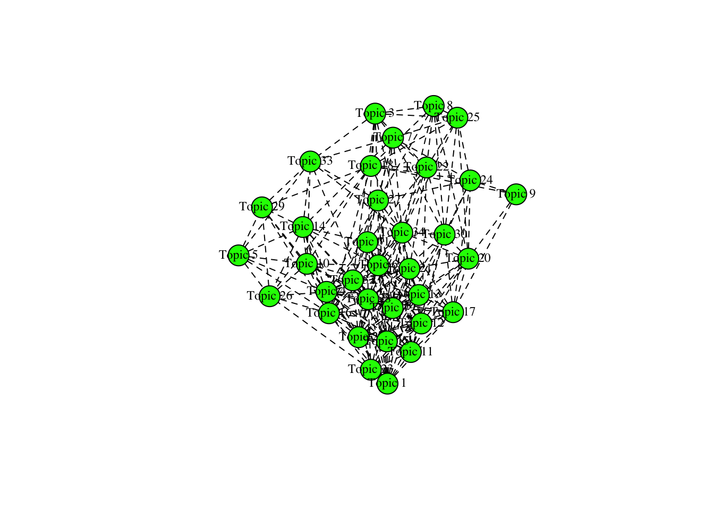
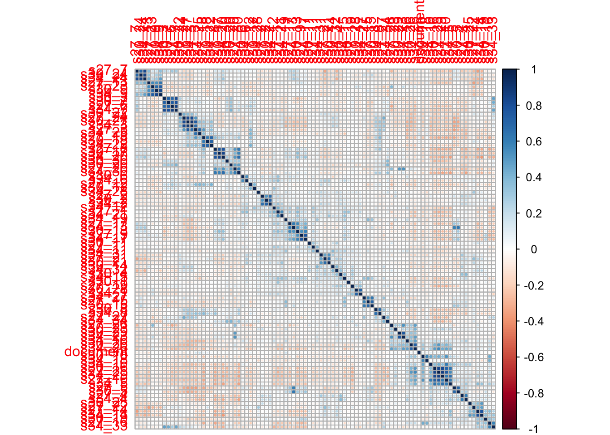
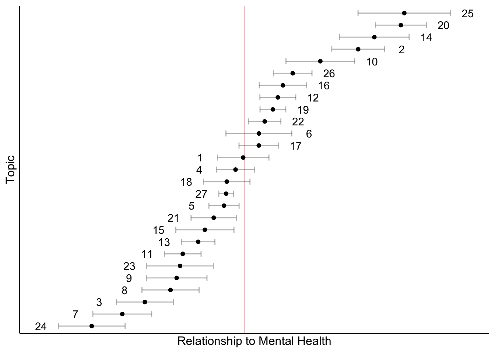
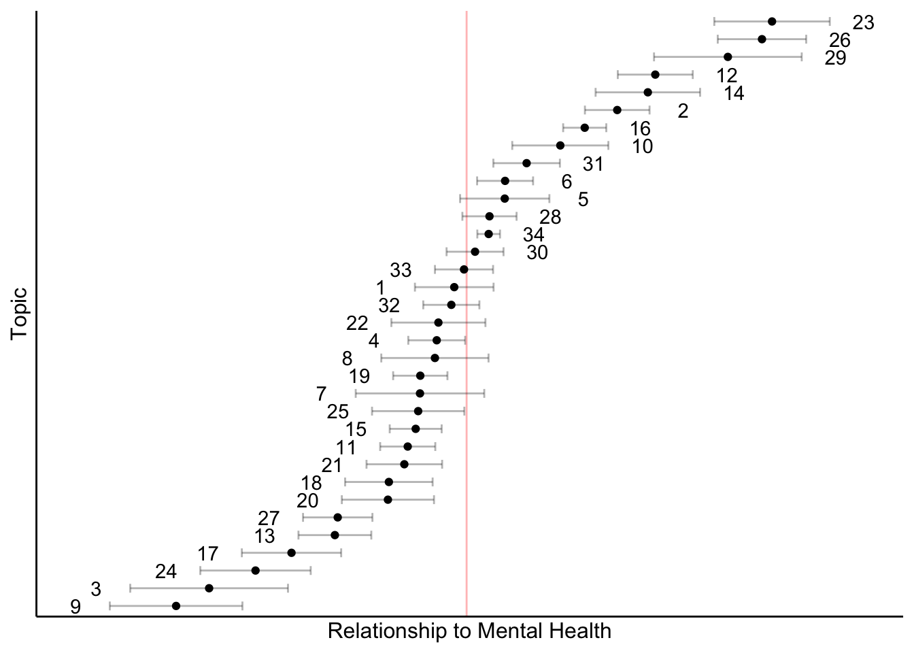
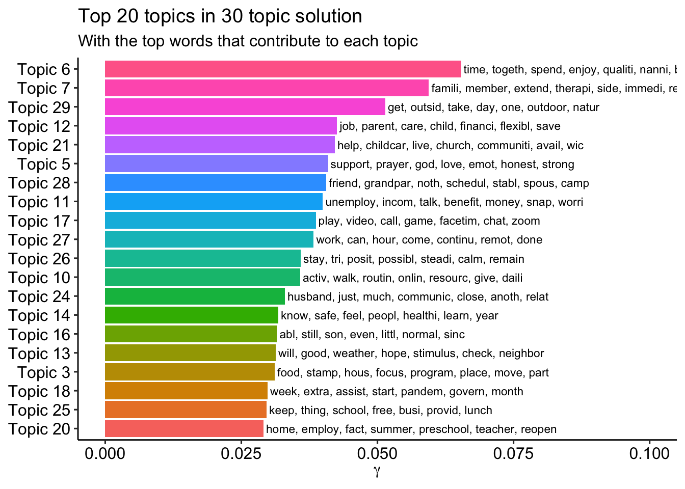
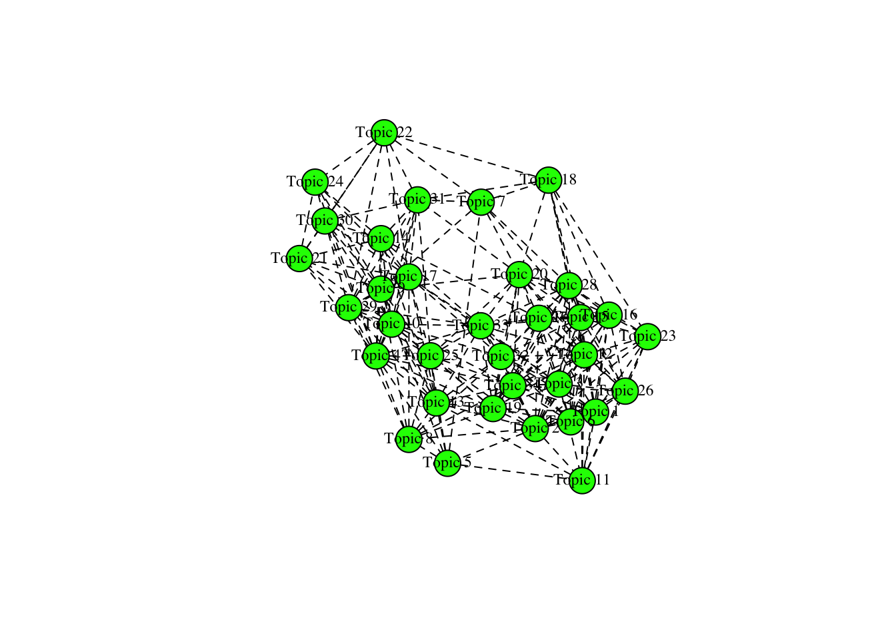
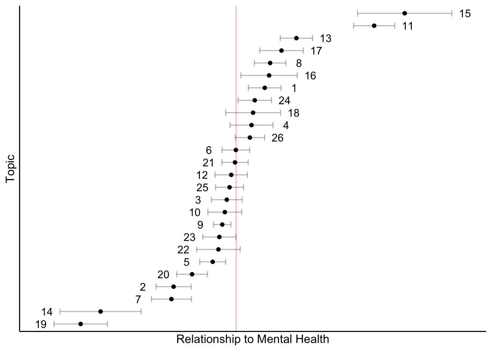

Structural topic modeling of open-ended responses
Question 1: Challenges
## Building corpus...
## Converting to Lower Case...
## Removing punctuation...
## Removing stopwords...
## Removing numbers...
## Stemming...
## Creating Output...## Removing 2288 of 4843 terms (2288 of 114814 tokens) due to frequency
## Removing 17 Documents with No Words
## Your corpus now has 13837 documents, 2555 terms and 112526 tokens.Testing three solutions: 27, 30 and 34 topics
Most common topics
27
30
34
Identify topics
27
1-5
Topic 1: Defiance
## Topic 1 Top Words:
## Highest Prob: also, just, peopl, want, dont, lot, around
## FREX: mask, peopl, wear, act, understand, defiant, around
## Lift: answer, cabin, hyperact, intens, pet, self-isol, vari
## Score: peopl, mask, want, dont, around, wear, lot##
## Topic 1:
## Defiant behavior. Temper tantrum when he doesn’t get his way. He also constantly change his mind about what he wants.
## I’m concerned that the USA will never be the same. It seems like fascism is winning while our country is sick with the pandemic and hurting from racial tensions caused by unforgivable police violence.
## Our biggest concerns is still catching covid 19 from just being out and doing essential things, there are many people not wearing mask around our area. We also do not know who has it because like health officials have mentioned, somebody can be positive and not feel any symptoms, even when we want to sneeze and cough, we force not to because we don't want anybody discriminating about us too.
## Our child is so ridiculously fussy and we feel so helpless as she just screams and whines all the time now and nobody believes us. We are strongly opposed to cry it out so we feel like we're traumatizing her because she cries all the time even with us holding her constantly. We have no idea what's wrong with her and everyone tells us that she's normal and babies whine. This is beyond that and we don't have anyone to help us because we are scared to have people come over.
## When to venture out again, most people don't seem to be taking precautions so I don't want to expose my family.Topic 2
## Topic 2 Top Words:
## Highest Prob: live, cant, realli, space, area, ’re, credit
## FREX: live, space, credit, anywher, bad, marriag, wors
## Lift: apt, grandchild, heavi, initi, marriag, max, moratorium
## Score: live, cant, realli, credit, card, space, loan##
## Topic 2:
## Well, we just found out Saturday that or landlord has notified the homeowners across the street that they will be tearing down our building to build a 300-unit apartment complex here instead. There was no date on the postcard saying when construction would begin, but we can't afford anywhere else it looks like and the idea of moving with a newborn is daunting.
## My marriage is really strained. It wasn't great to begin with, but this has made it so much worse.
## Newish (3years) marriage with twin toddlers living in a tiny apartment. Alot of change really fast and a tiny living space.
## Helping my child move forward with his IEP goals, especially the social/emotional and speech.
##
## Trying to explain to him what’s going on since he knows about the looting and rioting in the twin cities area and we are close to it.
##
## Trying to figure out if we think it’s a good idea for my hubby’s job to be reopening.
##
## Coping with our child finally going through the “no” phase. It’s developmentally important but making things really hard on us right now.
##
## We’re on edge. I totally panicked last night when I noticed a vehicle creeping up slowly, shining a flashlight on the laundromat across the street and into the dark and bushy areas surrounding it. It took several minutes, but eventually it pulled away and I saw it was a Sheriff’s vehicle. A few days back I heard lots of honking and wondered if it was rioters. It turned out being a graduation celebration, but took about 10 minutes for me to figure that out and it was alarming. That’s twice this week I’ve found myself trying to peek out my window without being in front of my window because I didn’t know if it was safe.
## Our housing problem started before covid but it definitely boiled into a whole bigger issue once this virus hit and even though I have extensive proof of everything that happened, no one, not the city I live in, not the court system in our city, council members in this area, I mean no one seems to care of this slumlord violates every right a tenant is supposed to have. I had eviction court last week and I wasn't even allowed in because i "had a fever of 102" yet i got home and took my temp three times on 2 different thermometers and I was under 98.6. So I literally wasn't allowed to defend myself, they refused to take or even look at any of our evidence, and they told us we had 30 days and were going to have another court date and then a magistrate made a ruling for my slumlord the next morning. I cannot even find a new place willing to work with us because people assume eviction makes me the trash in this situation but the truth is I almost lost my life in this property and my children have been hurt and even almost seriously hurt as well but this city doesn't seem to care. Not knowing if you'll be homeless while covid is still going around us literally terrifying and I can't believe we got our lives together and came so far to get totally screwed by some garbage person who values a meager amount of money over a family of 4 and their lives and mental and emotional health and I really can't believe no one seems to care either way.Topic 3: Fall school plans
## Topic 3 Top Words:
## Highest Prob: school, learn, start, exposur, virtual, schedul, person
## FREX: schedul, learn, virtual, camp, summer, school, person
## Lift: benefici, camp, digit, facilit, back--school, inadequ, site
## Score: school, learn, virtual, start, remot, onlin, schedul##
## Topic 3:
## Our schedule when school starts- our district is doing a hybrid schedule. My 3 year old is not going to preschool because of covid.
## Socialization for kids. School was supposed to start virtually however Governor trying to implement a 50% in person learning law. Now becoming a struggle between school district and state, leaving parents/kids in limbo
## School for the older kids. They are desperately in need of in person schooling rather than virtual learning.
## Figuring out our back-to-school plans; what to do for childcare for my 5-year-old when he is doing virtual school; if I am going back to work when school starts again (I am a part-time teacher)
## Waiting for school district to decide if we are going back to online learning or hybrid model; dealing with the unknown and contemplating various complicated work/daycare scenarios.Topic 4: Relocating
## Topic 4 Top Words:
## Highest Prob: hous, move, state, current, increas, leav, case
## FREX: hous, move, state, case, better, number, rise
## Lift: bought, coast, cross, floor, skyrocket, better, case
## Score: hous, move, state, increas, case, current, leav##
## Topic 4:
## We are trying to sell our house in a different town but before COVID we had contractors doing flooring and they cancelled indefinitely so we can't sell our house because we have no floors and we cant buy a new house because we haven't sold our current house so we live with my parents and share a room.
## My son’s father got a new job so now we are moving up the east coast from Florida to New Jersey so that’s a huge change. The move itself is extremely challenging especially while worrying about covid numbers on the rise
## My in laws moved in with us before the pandemic. My father in law passed away in April. And Mother in law is still living with us and it's a challenge.
## Hearing the numbers in our state are increasing faster note that everything is opening back to
## Because of the fact that our county in MD (Montgomery) is barely into Phase 1 and a half, we're moving to a different county here in MD. There will be more space, and more room for our children to be able to play, and to not be on top of everyone else. The concern though is the extreme risk. The movers have all either had some run in with positively tested for Covid-19 cases, or having to deal with individuals involved with purchase of a house.Topic 5: Monotony and nerves
## Topic 5 Top Words:
## Highest Prob: abl, thing, much, place, afford, everyth, togeth
## FREX: abl, togeth, everyth, rais, afford, thing, spend
## Lift: steam, argument, friends’, inconveni, monotoni, obstacl, shelter
## Score: abl, thing, afford, much, place, togeth, spend##
## Topic 5:
## Getting along, too much together time leads to arguments & attitudes.
## The unpredictable nature of everything and not being able to see family as easily.
## The monotony of not being able to go places and do things as a family
## Not being able to spend time with family and friends. Not being able to do things we normally do.
## Too much together time leads to tension & arguments.6-10
Topic 6: Balancing WFH and childcare
## Topic 6 Top Words:
## Highest Prob: work, time, parent, take, full, hard, manag
## FREX: full, time, infant, parent, manag, singl, mom
## Lift: artist, attorney, burnout, confer, decompress, deserv, extern
## Score: work, time, full, parent, manag, care, take##
## Topic 6:
## Managing working full time from home while caring for an infant full time, with interrupted sleep.
## Both parents work full time from home and have to simultaneously juggle working with parenting.
## Working Full time and Parenting Full time at the same time
## Managing working from home full-time while caring for an infant full-time, and not sleeping enough
## Working from home (mom) and working full time while providing childcare on my own with NO breaksTopic 7: Keeping kids entertained
## Topic 7 Top Words:
## Highest Prob: home, kid, keep, tri, activ, entertain, busi
## FREX: entertain, occupi, engag, kid, activ, stuck, tri
## Lift: devic, satisfi, spirit, unnecessari, entertain, engag, glu
## Score: keep, kid, home, tri, activ, entertain, occupi##
## Topic 7:
## Just trying to keep the kids active and happy with being home all the time
## Keeping kids active and off electronics while I work from home.
## Trying to keep the kids occupied and active and happy while staying safe and healthy
## Keeping my kids occupied other than with electronics while I am working from home
## Entertaining the kids, who after 3 months at home are still stuck at home.Topic 8: Social development of kids
## Topic 8 Top Words:
## Highest Prob: social, son, daughter, distanc, educ, interact, develop
## FREX: social, interact, develop, skill, educ, autism, appropri
## Lift: critic, “new, appropri, chemo, cooler, cue, lupus
## Score: social, interact, distanc, develop, educ, son, daughter##
## Topic 8:
## Social and emotional development of our child, such as learning social cues from other kids. Staying on top of age appropriate educational development.
## Our sons social development and education although I do love homeschooling him and he loves all of us being home together. Our daughters social development is a concern and she’s almost in her teens.
## Play and exploring, social interaction and social education
## Missing out on important social interaction for my children. My oldest missing the opportunity for socio-emotional growth and learning that she would have received through pre-school
## Education for our children being adequate and socializing with othersTopic 9: Not being able to see family
## Topic 9 Top Words:
## Highest Prob: famili, friend, see, miss, deal, visit, due
## FREX: famili, see, visit, member, travel, crazi, normalci
## Lift: border, cancer, crimin, famili, fli, georg, germani
## Score: famili, friend, see, miss, visit, member, deal##
## Topic 9:
## Travel ban for Europe, grandparents cannot visit
## Traveling out of state to see our families. We are a military family and the unknown about when it is safe to see our extended family creates uncomfortable conversations with them. Some extended family members do not take the virus seriously and are judging our concerns for traveling in the future.
## We miss our friends & regular outings. We have not been visiting relatives & missed several planned birthday celebrations.
## Missing friends and family members
##
## Missing nearby family and friendsTopic 10
## Topic 10 Top Words:
## Highest Prob: enough, food, rent, util, groceri, buy, cost
## FREX: enough, util, groceri, car, mortgag, suppli, transport
## Lift: diaper, accid, bathroom, bull, curbsid, dad’, estat
## Score: food, rent, enough, util, car, groceri, buy##
## Topic 10:
## Paying the mortgage, car insurance, car payments, electric, and propane. Significant house and car problems that we cannot afford to fix
## Financial. Cannot pay my vehicle property tax in addition to my car payment and insurance and still afford to eat and have utilities on.
## not having enough money to pay for rent and utilities and food just basic needs
## There are still supplies that have not became available in the store. I only go to one store once a week and my stores are still not stocked up
## Buying a car
## Food11-15
Topic 11
## Topic 11 Top Words:
## Highest Prob: feel, none, small, impact, comfort, communiti, countri
## FREX: none, comfort, communiti, countri, children’, train, aren’t
## Lift: aren’t, client, conceiv, disagre, guilti, heath, kinda
## Score: feel, none, comfort, small, countri, communiti, train##
## Topic 11:
## Feeling unsupported due to the la k of social contact.
## Feeling uncertain about our job outlook and the outlook of our children’s schooling
## Reading the news causes so much panic
## As the stay-home orders are lifted, there is more demand for our hospitality businesses- B&B, restaurant, Irish pub, hotel, craft brewery- we are concerned that increased interaction with customers will result in the transmission of COVID 19. Since our businesses are nearly a quarter million dollars in the red right now, we kinda need those paying customers regardless of their pandemic hygiene.
## Governmental overreach in personal freedoms and small business operations
## We're anxious about where this country is going. My husband says he'll be comfortable staying if Trump loses the election in November, but I'm DONE. The lackluster response to Covid-19 was the last straw for me, and the mass riots are just the icing on top of the giant cake of suck this country has become. My husband and I disagree about what to do next, and that's a challenge.
## Opening up our state fully and completely to reduce economic impact. Governmental overreach and control.Topic 12
## Topic 12 Top Words:
## Highest Prob: day, two, teach, teacher, first, everi, adult
## FREX: day, teach, fight, boy, four, sibl, first
## Lift: assign, boy, colicki, doabl, fight, insist, itll
## Score: day, two, teach, class, teacher, first, everi##
## Topic 12:
## We just started a nannyshare with a neighbor/colleague for our 4.5 year old, 6 month old, and our neighbor's 7 month old. Our 6 month old cries the entire day. The ENTIRE DAY. Every moment she's awake she scream cries. She cries so much her voice is hoarse. She gave herself a blood nose yesterday. So our 4.5 year old is reasonably distressed and just hangs out in the basement or hides in our home "office" with his earphones on. I recognize that this may be partly developmental, but it's painful. The only silver lining (small, and mixed bag) is that she sleeps well for the nanny, but this is partly because she's so exhausted from crying that she just passes out.
## Not going insane b/c it's impossible for two adults to work when you have three younger kids running around.
## Remote learning full time with 3 kids was insane and just about impossible. My 5 year old hasn’t received any services related to his IEP since March. Teletherapy was offered but he was 4 1/2 and turned 5 in August and it just wasn’t doable. His regression is scary and my 3 year old is picking up on the 5 year olds habits that he can’t help.
## Navigating hybrid school model (in classroom two days a week, distance learning three days a week) for our second grader and Kindergartener and hoping it will change to full time in person soon as our second grader struggled/fell behind with the abrupt switch to distance learning only in the spring.
## Worrying about schooling for next year, both for me as a kindergarten teacher and for my first grader and preschooler, trying to balance my work with my first grader's studies.Topic 13
## Topic 13 Top Words:
## Highest Prob: safe, continu, everyon, reopen, way, especi, coronavirus
## FREX: safe, coronavirus, everyon, continu, vaccin, agre, track
## Lift: arizona, coronavirus, dilig, effici, lax, pertain, recommend
## Score: safe, everyon, continu, reopen, way, coronavirus, especi##
## Topic 13:
## Keeping everyone safe I. The most efficient way
## Stress over whether reopening is safe. Not being able to go to my grandpas funeral in Florida.
## Keeping morale up and keeping everyone home to stay safe.
## Continuing to remain healthy! Finding new ways to enjoy life that incorporate masks and social distancing.
## Allergic to toxic chemicals and fragrances being stayed everywhere and do not agree with mandatory vaccinationsTopic 14
## Topic 14 Top Words:
## Highest Prob: job, incom, due, unemploy, employ, lose, spous
## FREX: unemploy, lose, benefit, loss, secur, furlough, job
## Lift: airlin, appeal, breadwinn, compani, differenti, director, fmla
## Score: job, incom, unemploy, employ, lose, benefit, loss##
## Topic 14:
## I am out of work. I lost my job. I lost my income. I am losing my mind.
## Ongoing uncertainty about job security and pay security and benefits security
## Income decreasing due to reduces unemployment benefits.
## Financial - my spouse is indefinitely furloughed and I freelance part-time so we are almost 100% reliant on unemployment benefits right now to cover our expenses. Once the extra $600 weekly payment expires at the end of July, we will have to start depleting our savings to pay for expenses. In addition, we are expecting our third child and if my spouse loses his job, we also lose our healthcare.
## my husband being partial unemployed and not knowing if we are going to continue to rec' the extended benefits, bc our income has been cut in 1/4Topic 15
## Topic 15 Top Words:
## Highest Prob: get, covid, virus, sick, fear, covid-, expos
## FREX: virus, sick, fear, get, infect, expos, corona
## Lift: corona, sick, virus, epicent, fear, get, gettimg
## Score: get, covid, sick, virus, fear, expos, covid-##
## Topic 15:
## Fear of getting covid or fear of being asymptomatic and passing it on
## I am exposed at work, there have been a few cases of corona virus and I am scared of getting infected and infecting my family
## Bot getting infected. My brother in law may have covid and i fear he will infect us somehow.
## The fear of getting covid-19 virus
## The fear and doom of having to live differently and fear of getting covid virus16-20
Topic 16
## Topic 16 Top Words:
## Highest Prob: childcar, find, make, stress, new, can, sure
## FREX: childcar, sure, find, make, reliabl, stress, meet
## Lift: reliabl, stressanxieti, planner, popul, sure, childcar, dip
## Score: childcar, find, make, sure, stress, new, can##
## Topic 16:
## Making ends meet , making sure they are learning
## Making sure we don’t overspend and can stick to our budget.
## Making sure my son can continue with early intervention and I can find a new position for an income after July.
## just making ends meet and making sure that we can financially fix things that are broken around the house
## How to find adequate safe childcare so that we can return to work adequate hours/make enough money.Topic 17
## Topic 17 Top Words:
## Highest Prob: help, without, outsid, use, play, toddler, limit
## FREX: park, often, group, play, librari, outsid, depress
## Lift: attach, disappoint, group, librari, museum, often, pool
## Score: help, outsid, play, without, park, toddler, use##
## Topic 17:
## Not being able to expose my toddlers to activities outside the home like zoos museums, swimming lessons, other kids their age, trips to the library, and story time, athleti a
## Work/life balance without help with toddler plus pregnancy exhaustion
## Keeping a toddler busy with no parks, pools, museums, etc
## Just getting outside and having my toddler enjoy things like the zoo or museums
## The biggest challenges continue to be a modified routine for the kids. We cannot take them places they otherwise would be going on a regular basis (park, play dates, church, restaurants, etc).Topic 18
## Topic 18 Top Words:
## Highest Prob: year, old, lack, preschool, oldest, homeschool, public
## FREX: homeschool, year, upcom, old, oldest, public, lack
## Lift: asd, congenit, friendsfamili, -year, debat, defect, foid
## Score: year, old, lack, preschool, oldest, homeschool, public##
## Topic 18:
## Caring for a newborn while meeting the needs of a very energetic 5 year old with special needs. Also prospects of upcoming school year for the five year old.
## My 4 year old is ADHD my 2 year old has asd and deaf in 1 ear
## Distance learning for my 9 year old! And social skill for both my 9 year old and 3 three year old
## Managing newborn twins and three year old twins with zero support, when we had planned on having support.
## Everyone is antsy in the house. My oldest (6-years) is more down than usual and cries or feels sad more frequently. We stopped receiving some services for my 3-year old autistic son. Preschool for my 4-year old was cancelled and school online is a nightmare.Topic 19
## Topic 19 Top Words:
## Highest Prob: worri, now, balanc, right, risk, anxieti, high
## FREX: air, risk, elearn, anxieti, worri, ignor, level
## Lift: air, elearn, loot, block, hoursweek, realiti, chunk
## Score: worri, now, balanc, right, risk, high, anxieti##
## Topic 19:
## Not many challenges right now- just the mental hurdles trying to overcome (stress, anxiety, paranoia). I feel weary.
## juggling work and children. It is unhealthy to work from 7 pm to 1 am and be a caretaker from 7 am to 6 pm, but its the reality of our lives right now. We are worried about our children's social health, mental health, and of course, risk of getting COVID.
## My son is high risk so when I am ordered back to work I worry about his health and if it’s worth it to return at all.
## The biggest concern I am facing right now as the single parent of my son is the uncertainty of my son's health right now. Unfortunately, my son has had ongoing fevers not accompanied by any other symptoms. As of right now, there is nothing doctors can do to assist this strange occurrence- lack of symptoms has them stumped. I worry about his health and hope this passes soon. He has been unable to attend daycare due to his fever. This leaves me worried about my online courses and juggling classes and taking care of a sick child.
## Navigating when (and if) to reduce social isolation measures and invite our childcare provider (my mother-in-law, who is high risk) back into our home. Balancing increasing her risk and our risk (since I am high risk) with the stress of working from home full time with a very active 18 month old.Topic 20
## Topic 20 Top Words:
## Highest Prob: child, children, health, care, isol, mental, support
## FREX: mental, child, isol, health, children, support, system
## Lift: cognit, psycholog, capac, illeg, mental, relentless, foster
## Score: child, health, children, mental, isol, care, behavior##
## Topic 20:
## Parents’ mental health, kids’ mental health
## Access to behavioral health care and medical specialists.
## Coordinating childcare between roommates who are out of work and on unemployment and the child's Aunt & Uncle. Providing appropriate social emotional support to my child.
## Maintaining our health and child care by a trusted provider. Also learning and cognitive are important to us.
## Childs behavior and violent behavior21-25
Topic 21
## Topic 21 Top Words:
## Highest Prob: month, week, pandem, babi, come, next, issu
## FREX: babi, birth, pregnant, month, come, born, pandem
## Lift: appt, face--fac, histori, led, mayb, network, recoveri
## Score: week, babi, month, pandem, next, issu, come##
## Topic 21:
## Our biggest challenge is childcare and maintaining and income. I am transitioning from a purely clinical position where I am currently able to telework due to the pandemic, to a faculty position where I am expected to be on campus and put my family at risk. The Pandemic Unemployment Assistance (PUA) for independent contractors I have qualified for 3 weeks since the pandemic began, but my income has decreased greatly. I typically made 1800-1900 per week before setting aside for taxes prior to the pandemic. To qualify for PUA, I have to make less than 717$ per week. I currently average 700-800$ per week due to cancellations and no-shows.
##
## My grandparents watch my daughter one day per week. I would like them to watch my daughter 2 days per week so that I can get my work done. However, I think they are going to end up not watching her at all because the college I am going to work to plans to re-open face to face. I don't blame them. Every interaction we have with other people in-person amplifies our risks for contracting COVID-19 exponentially.
## Preparing to have a baby in the next week during the pandemic.
## having to wait for testing when there are signs showing something is wrong with your child. What took maybe 2 weeks to get tested is now taking months.
## Preparing for a second baby (just found out we're expecting)
## I am trying to work from home as a 1099 independent contractor doing telepractice speech therapy. I am working 7 days per week to see half my caseload, and half of the sessions that do occur are rescheduled 2 or 3 times. This is very distressful to my daughter, who turns 3 this week. My husband is still working outside the home. On Saturday, I gave in and asked my mother-in-law to help with childcare for 3 days a week, despite our county in our state still being under a stay-at-home order. I needed to preserve my and my daughter's mental health. Unfortunately, this is somewhat risky because my husband works in healthcare.Topic 22
## Topic 22 Top Words:
## Highest Prob: husband, sinc, one, hour, close, therapi, speech
## FREX: therapi, appoint, doctor, speech, close, hour, occup
## Lift: telehealth, audit, certainti, committe, doctor, factori, flu
## Score: husband, hour, therapi, one, speech, sinc, write##
## Topic 22:
## My son is speech delayed (20 months old and has no verbal words) and his pediatrician would not see him for his 18 month appointment and would not refer him to speech therapy. We referred him ourselves as parents and he now receives early intervention services but that is all. He has no socializing and his speech therapy is all via Zoom.
## My main challenge is getting my 2 year old the care that he needs. He has multiple medical/developmental issues. Offices have been closed, surgeries cancelled, therapy has gone virtual. I can't bring my daughter with me to his appointments so my husband has missed work. I broke a bone in my foot and couldn't go to the ER because I couldn't bring the kids. My children's peds office was closed for months so my newborn daughter didn't have an appointment until she was 2 months old. Getting medical care, therapy, etc. for myself and my kids has been a compete DISASTER.
## Balance. We're both professors and are not being paid, but he's on COVID committees for his university. This means he's working all the time, while I care for the kids. This means I'm barely working, which puts me at risk. I feel like he's thriving work wise, and I'm drowning.
## Social interactions for our child (or lack thereof), our child may also have some speech delay and we have reached out to our state program for speech therapy and are awaiting our evaluation results but even if we are eligible I wonder about the effectiveness of online speech therapy.
## My husband is furloughed effective October 1st and he was just notified that he was a close contact of someone who tested positive for COVID; my husband has no symptoms and is awaiting test results.Topic 23
## Topic 23 Top Words:
## Highest Prob: stay, healthi, challeng, biggest, safeti, struggl, physic
## FREX: healthi, challeng, safeti, stabil, biggest, sane, stay
## Lift: bond, burden, challeng, discord, self-quarantin, safeti, stabil
## Score: stay, healthi, challeng, biggest, safeti, burden, stabil##
## Topic 23:
## Staying healthy, staying sane
## Staying sane while staying in to stay safe.
## Our biggest concern is to stay healthy
## Staying healthy and staying afloat financially
## I'm a healthcare worker and the biggest challenge is for us to stay healthy.Topic 24
## Topic 24 Top Words:
## Highest Prob: will, back, return, fall, open, know, send
## FREX: fall, back, will, return, whether, open, send
## Lift: dog, whether, challengeconcern, childcareschool, hubbi, ifwhen, soccer
## Score: will, back, fall, return, send, whether, open##
## Topic 24:
## Whether we will be ready to go back when schools open up in the fall and what that transition will be like.
## Figuring out plans for Fall, whether my position will go back to on-site and whether my son will be back in his preschool.
## Will school open in the fall and what will it look like?
## What the fall will look like. Both myself and my husband work for a school
## District. What will school look like? What will daycare look like? What will be safe?
## What will kindergarten look like this Fall. When will Dad go back to work.Topic 25
## Topic 25 Top Words:
## Highest Prob: pay, bill, money, save, routin, medic, debt
## FREX: bill, money, catch, cloth, water, pay, tabl
## Lift: flow, heater, kinder, leftov, outstand, preoccupi, tabl
## Score: bill, pay, money, save, debt, paid, medic##
## Topic 25:
## Paying bills, clothing that fits
## Due to minor decrease in pay paying for certain non essential bills and non necessities has been difficult.
## Paying the higher electric bills
## Paying to fix the water heater and medical bills.
## Paying my light bill26-27
Topic 26
## Topic 26 Top Words:
## Highest Prob: concern, financi, financ, emot, uncertainti, futur, well
## FREX: financi, financ, futur, concern, emot, boredom, child’
## Lift: boredom, dentist, financ, financi, heal, parents’, partner’
## Score: concern, financi, financ, emot, uncertainti, futur, well##
## Topic 26:
## Financial instability, mother/grandma who is our biggest support is in poor health and her healthcare is expensive, I have poor mental health and my child’s father has substance abuse issues and does not provide financial or child care support.
## Emotional wellness and financial concerns
## Financial uncertainty for the future and health uncertainty
## Being socially isolated, financial concerns, employment concerns and family concerns.
## Financial wellness and health wellnessTopic 27
## Topic 27 Top Words:
## Highest Prob: need, daycar, normal, put, decis, hope, allow
## FREX: decis, need, put, normal, daycar, center, hope
## Lift: courag, surpris, trace, decis, workchildcar, whatev, center
## Score: need, daycar, normal, decis, put, best, hope##
## Topic 27:
## At the 10 day of school count our elementary school had so many children they needed to hire 5 teachers, so instead of allowing us to switch our method of schooling after first quarter in Oct. we were given until this past Friday to decide. It’s either now, 3 weeks into school or January, so in what seems like a year of never ending difficult decisions, we had yet another. We opted to keep our 5 and 9 year old home and have hopefully some sense of consistency until then at least. We are hoping that their teachers remain the same until then and there are no more surprises for awhile. We miss normalcy and friends, but I am doing my best to keep my kids safe and educated.
## In February I was to start utilizing a local workforce education and certification program in order to start working at a daycare facility part time. There has been a daycare provider shortage in my area for over a year and this was the only way I could get my child into a daycare because they allow staff members’ age appropriate children to attend as a benefit. Both options were closed down and are still closed. I am not even allowed to access study materials and test online for the childcare certifications needed. My family is surviving this pandemic but we’ve had to be extremely careful financially. I am worried once the daycares open up there will be so many others needing/wanting the same positions at this specific daycare that I will lose the opportunity to even have a chance at the position because I am unable to access the free certification program.
## School. On the social/emotional level our child needs (and wants) to go, but on a health and safety standpoint he can’t handle it. He gravitates toward danger and loooooves putting things in his mouth.
##
## Also, my hubby’s job isn’t what we would classify as stable. Restaurants it’s a little shaky on how they can remain open and we won’t be surprised if it needs to close up again with the way this pandemic is going.
## I want my kids back in school. They need to be taught by their teachers. They need to see their peers. I need a break from them. They need a break from each other.
## Having to work full time and be a full time mom doesn't allow me to be great at either. We need to go back to normal.30
1-5
Topic 1
## Topic 1 Top Words:
## Highest Prob: schedul, difficult, mani, chang, routin, grandpar, adjust
## FREX: adjust, routin, chang, big, spread, grandpar, mani
## Lift: bodi, lifestyl, promot, sold, adjust, chanlleng, format
## Score: chang, difficult, mani, routin, adjust, schedul, grandpar##
## Topic 1:
## I have had many health issues, due to stress. My body handles stress very poorly, and not without many venues to relax and wind down. I built up too much stress in my body that it caused me multiple visits to the doctor. therefore, way too many hospital bills...
## Re-entering into society after isolation. We are still being cautious which is difficult when some family are not doing the same.
## Our biggest challenges relate to childcare for my daughter. Prior to COVID-19, my mother-in-law, grandparents, and a mother-figure (woman who was my father's girlfriend for 20 years, including the majority of my childhood) of mine watched my daughter while I worked outside the home. I am currently doing tele practice speech therapy. As Berks County prepares to enter the green phase of re-opening in Pennsylvania, I may be expected to go back to providing home-based services and need increased childcare. However, all caregivers except my mother-in-law are elderly and immune compromised. I can't comfortably ask them to come back, but my mother-in-law is a self-employed photographer and needs to work too.
## Constant change and adjustments to our schedule due to my husband's varying schedule to work physically.
## The biggest challenge for us now is that sometimes we need to avoid many people outside when going out, so as to not have much contact with people. That means that we have to choose inconvenient times for us. Compared to the obstacles that we have overcome, this really is not that much of a big deal.Topic 2
## Topic 2 Top Words:
## Highest Prob: live, cant, way, situat, differ, even, area
## FREX: live, situat, way, doesnt, custodi, cant, differ
## Lift: copar, eager, custodi, financesh, flight, housem, limbo
## Score: live, cant, way, situat, differ, doesnt, divorc##
## Topic 2:
## Our housing problem started before covid but it definitely boiled into a whole bigger issue once this virus hit and even though I have extensive proof of everything that happened, no one, not the city I live in, not the court system in our city, council members in this area, I mean no one seems to care of this slumlord violates every right a tenant is supposed to have. I had eviction court last week and I wasn't even allowed in because i "had a fever of 102" yet i got home and took my temp three times on 2 different thermometers and I was under 98.6. So I literally wasn't allowed to defend myself, they refused to take or even look at any of our evidence, and they told us we had 30 days and were going to have another court date and then a magistrate made a ruling for my slumlord the next morning. I cannot even find a new place willing to work with us because people assume eviction makes me the trash in this situation but the truth is I almost lost my life in this property and my children have been hurt and even almost seriously hurt as well but this city doesn't seem to care. Not knowing if you'll be homeless while covid is still going around us literally terrifying and I can't believe we got our lives together and came so far to get totally screwed by some garbage person who values a meager amount of money over a family of 4 and their lives and mental and emotional health and I really can't believe no one seems to care either way.
## My marriage is really strained. It wasn't great to begin with, but this has made it so much worse.
## My marriage is pretty rocky right now. It wasn't great to begin with, but quarantine has definitely made things worse. I can't get out and do things with my son that make me feel happy.
## Newish (3years) marriage with twin toddlers living in a tiny apartment. Alot of change really fast and a tiny living space.
## We were in the middle of an ugly divorce and custody dispute that has been put in limbo due to COVID-19 shutting down the courts. Additionally, I'm attempting to find a new job and positions aren't readily available.Topic 3
## Topic 3 Top Words:
## Highest Prob: work, home, husband, financ, hour, reduc, mom
## FREX: work, financ, home, full-tim, load, reduc, husband
## Lift: inadequ, financ, load, work, home, workno, full-tim
## Score: work, home, financ, husband, hour, full-tim, reduc##
## Topic 3:
## Trying to maintain my full-time work load while also being a full-time caregiver for my children since my husband is an essential employee
## I am pregnant so coordinating doctor's appointments/blood draws while my husband works from home. Also trying to balance my at home work with my husband's while watching the kids.
## Worried about my husband being furloughed from work and working less hours.
## How to manage the demands of working from home and schooling from home.
## Being able to work from home so we can stay safe and keep our jobs. I need my husband to work from home to make it easier for me to work from home too.Topic 4
## Topic 4 Top Words:
## Highest Prob: pandem, sinc, risk, move, covid-, current, high
## FREX: risk, high, move, pandem, riot, coronavirus, immigr
## Lift: amid, deputi, dispit, grandpa, inequ, mourn, seper
## Score: pandem, move, risk, high, covid-, sinc, coronavirus##
## Topic 4:
## My in laws moved in with us before the pandemic. My father in law passed away in April. And Mother in law is still living with us and it's a challenge.
## Finding a safe and affordable location away from looting, rioting, fireworks, gunshots, protests, homelessness epidemic, failed schools, overpriced housing and failed public institutions/government. All of these negative trends have been significantly accelerated by the Covid crisis. Urban centers are now VERY dangerous and VERY unhealthy places for people especially people with kids. It is very clear that our child has been traumatized by a combination of being forced inside by the pandemic while watching protesters and rioters from the window. He has a sound sensitivity and the gunshots and fireworks are pretty constant after dark.
##
## Where to go though is the million $ question. I have lived in the DC city core for 20+ years so it is very daunting to have to plan to evacuate your home you have loved for such a long time especially during a pandemic. I wish I were joking or exaggerating. I am not. Even a good bit of the food supply chain continues to break down on a weekly basis. It is insane. Instead of fixing these issues, our mayor is running for Vice President and our city council has proposed raising taxes???????
## High risk pregnancy during coronavirus, moving during a pandemic
## My son’s father got a new job so now we are moving up the east coast from Florida to New Jersey so that’s a huge change. The move itself is extremely challenging especially while worrying about covid numbers on the rise
## A high risk pregnancy during coronavirus, moving.Topic 5
## Topic 5 Top Words:
## Highest Prob: abl, hous, thing, place, buy, togeth, spend
## FREX: hous, abl, stuck, buy, thing, travel, most
## Lift: germani, europ, friends’, leisur, steam, most, stuck
## Score: abl, hous, thing, buy, place, stuck, togeth##
## Topic 5:
## Not being able to travel to Germany to visit grandparents and them not being able to travel either
## The weather being hot and not being able to go swimming.
## Being stuck in the house and not being able to go out and enjoy some fresh air. Being stuck at home is not healthy at all. We are weakening our immune systems.
## Depression from having to stay home and not be able to go do things like go to the beach, zoo or playground to relieve stress and be outside of the house (playgrounds are now open here but we are not ready to venture out yet)
## Not being able to spend time with family and friends. Not being able to do things we normally do.6-10
Topic 6
## Topic 6 Top Words:
## Highest Prob: enough, just, hard, dont, lot, realli, break
## FREX: sleep, enough, train, potti, space, exercis, energi
## Lift: deserv, scream, whine, worn, attorney, breast, fals
## Score: enough, lot, sleep, dont, hard, just, break##
## Topic 6:
## Sleep. The kids aren't sleeping good, which ensures we don't sleep good either.
## Our child is so ridiculously fussy and we feel so helpless as she just screams and whines all the time now and nobody believes us. We are strongly opposed to cry it out so we feel like we're traumatizing her because she cries all the time even with us holding her constantly. We have no idea what's wrong with her and everyone tells us that she's normal and babies whine. This is beyond that and we don't have anyone to help us because we are scared to have people come over.
## We just started a nannyshare with a neighbor/colleague for our 4.5 year old, 6 month old, and our neighbor's 7 month old. Our 6 month old cries the entire day. The ENTIRE DAY. Every moment she's awake she scream cries. She cries so much her voice is hoarse. She gave herself a blood nose yesterday. So our 4.5 year old is reasonably distressed and just hangs out in the basement or hides in our home "office" with his earphones on. I recognize that this may be partly developmental, but it's painful. The only silver lining (small, and mixed bag) is that she sleeps well for the nanny, but this is partly because she's so exhausted from crying that she just passes out.
## 4-month-old does not sleep well and takes up a lot of our time, so we don't have time for simple household chores.
## Being burnt out. It is a constant cycle of working, cleaning, cooking, trying to engage the kids, and not getting enough sleep or peace and quiet.Topic 7
## Topic 7 Top Words:
## Highest Prob: time, childcar, tri, parent, balanc, full, manag
## FREX: full, balanc, childcar, manag, juggl, time, infant
## Lift: execut, generat, wfh, workschool, impend, -line, full
## Score: childcar, time, balanc, full, manag, figur, parent##
## Topic 7:
## Agreeing on how we spend our time (alone time ha time together as a couple) and equal division of household duties
## Managing WFH more than full time while also managing childcare.
## Working Full time and Parenting Full time at the same time
## Both parents work full time from home and have to simultaneously juggle working with parenting.
## Managing working full time from home while caring for an infant full time, with interrupted sleep.Topic 8
## Topic 8 Top Words:
## Highest Prob: son, daughter, daycar, want, open, send, oldest
## FREX: speech, son, daycar, therapi, send, daughter, delay
## Lift: chemo, “new, motor, normal”, thrill, asleep, speech
## Score: daycar, son, send, daughter, open, therapi, behavior##
## Topic 8:
## Whether or not to send our son back to daycare. Cases are blowing up and the stories of outbreaks at daycares freak me out, but our “new normal” is so exhausting!
## Accessing health therapy services such as speech therapy, occupational therapy, physical therapy
## Our oldest son is showing signs of depression and the youngest has been extremely hyperactive bored out of his mind.
## My oldest is showing signs of depression not wanting to do anything, my youngest is acting up, he’s bored and very hyperactive.
## Being separated from 2 of my daughters. Speech therapy and behavioral therapy appointments.Topic 9
## Topic 9 Top Words:
## Highest Prob: stay, safe, healthi, virus, tri, none, expos
## FREX: stay, none, healthi, sane, corona, stir, safe
## Lift: corona, idiot, none, racist, stir, sane, stay
## Score: stay, healthi, safe, none, virus, expos, infect##
## Topic 9:
## Just trying to stay healthy and safe
## Staying safe from Corona virus
## Staying sane while staying in to stay safe.
## Just trying not to catch the virus and stay safe and healthy
## Staying safe while staying saneTopic 10
## Topic 10 Top Words:
## Highest Prob: make, sure, food, end, still, provid, meet
## FREX: sure, food, make, budget, cloth, item, noth
## Lift: applic, distribut, fruit, sure, tent, veggi, bull
## Score: make, food, sure, meet, end, cost, provid##
## Topic 10:
## Making sure our finances cover all needs. Making sure my son is growing and hitting all his milestones
## Making sure we have food to eat and utilities are paid
## Making sure there is food on table, clean clothes
## Making ends meet , making sure they are learning
## Making sure everything is going to be paid11-15
Topic 11
## Topic 11 Top Words:
## Highest Prob: employ, busi, uncertainti, close, futur, everyth, long
## FREX: futur, busi, uncertainti, employ, close, econom, apart
## Lift: oper, owner, bankruptci, failur, kinda, liabil, overreach
## Score: busi, employ, futur, uncertainti, close, small, government##
## Topic 11:
## Governmental overreach in personal freedoms and small business operations
## Small appliance failures, and minor air condition maintenance.
## As a small business owner, there have been some negative impacts on the business that had not previously been anticipated. Trying to figure out how to work through that.
## As the stay-home orders are lifted, there is more demand for our hospitality businesses- B&B, restaurant, Irish pub, hotel, craft brewery- we are concerned that increased interaction with customers will result in the transmission of COVID 19. Since our businesses are nearly a quarter million dollars in the red right now, we kinda need those paying customers regardless of their pandemic hygiene.
## Opening up our state fully and completely to reduce economic impact. Governmental overreach and control.Topic 12
## Topic 12 Top Words:
## Highest Prob: much, spous, older, teach, unabl, first, caus
## FREX: fight, younger, older, spous, teach, act, focus
## Lift: argument, attitud, fight, rivalri, secondari, solo, younger
## Score: much, older, teach, spous, unabl, fight, class##
## Topic 12:
## Behavior of older sibling. We are unable to manage his meltdowns anymore
## Mental health/behavior of my elementary age child and how that is impacting the entire family - more anxious, acting out, rude, defiant. This is causing younger siblings to act out in the same and causing parents to be overwhelmed, stressed and more likely to yell and feel out of control of the household.
## Too much together time leads to tension & arguments.
## I feel trapped in my home, unable to help my cold cope with his stressors. I'm constantly fighting him to get him to do schoolwork, use his manners and follow instructions. My husband is usually helpful when he's home, but he works 60+ hours a week. The little time we have together, we wanted to talk about current events, which is a subject about which we constantly disagree. Lately we've been fighting a few times a week right before bed about social justice, politics, science, you name it. It's exhausting. I feel like I don't have anyone in my corner who knows how to do anything without throwing a tantrum. It's exhausting. I miss adults.
## Not getting along with spouse. Spouse getting aggressive during argument. Drinking too much.Topic 13
## Topic 13 Top Words:
## Highest Prob: feel, friend, see, activ, peopl, outsid, miss
## FREX: friend, miss, outsid, play, lone, activ, church
## Lift: epicent, rejoin, stepdaught, church, daddi, extracurricular, resurg
## Score: friend, activ, see, feel, peopl, miss, outsid##
## Topic 13:
## Not seeing friends and family in person. I am an extrovert, and miss bing around people. And it seems my 19 mo might also very much be a people person and he misses being around people too.
## Missing playgroups and extracurricular group activities
## Feeling isolated and alone. Inability to visit with family and friends. Restrictions from doing activities we enjoy such as hiking, going to the beach, swimming, taking vacations.
## My children were used to extra curricular activities, library visits, play dates. Family trips and gatherings. Being stuck at home has affected there mood. My children need to build immunities by being around other people. This will only affect them.
## Not being able to get out and do the social activities we like. We miss parks, playgrounds and church.Topic 14
## Topic 14 Top Words:
## Highest Prob: worri, exposur, continu, state, lose, happen, reopen
## FREX: case, possibl, continu, exposur, partner, lose, remain
## Lift: halt, spike, bout, progress, sacrific, surg, surpris
## Score: worri, exposur, continu, happen, state, case, reopen##
## Topic 14:
## Being able to protect ourselves from thieves when the economy gets worse and people get more desperate. Possible civil war if communism is pushed on people. Having to use deadly force if vaccines are pushed on my family. Having to organize to develop a black market local economy if people are no longer allowed access to stores without required vaccines, and organizing to develop our own economies to be able to avoid the requirements. The threat of communism is serious regardless of who wins the elections, civil war will happen in my town against anyone who pushes for communism, people are organizing and preparing for it.
## I"m worried about the stock market and I'm worried about states reopening and spreading coronavirus.
## worried about the stock market crashing and losing retirement account funds.
## Worry about the uncertainty of what will happen with school in the fall and with how our state, local and national officials are treating the COVID crisis
## We are concerned with continuing to be home as much as possible, especially since it looks like our state is rapidly increasing in case numbers.Topic 15
## Topic 15 Top Words:
## Highest Prob: get, covid, normal, bring, done, scare, relat
## FREX: get, along, done, relat, normal, bring, winter
## Lift: gettimg, trustworthi, along, get, renov, nerv, winter
## Score: get, covid, normal, done, bring, along, scare##
## Topic 15:
## Trying to get our lives back to as normal as possible. Trying to get the kids to get along and get space.
## Getting along. Everyone is getting annoyed with each other.
## getting the kids out to play and get back to normal
## Concerned about being pregnant, my partner’s type 2 diabetes, and how that makes us susceptible to a bad case of covid
## Kids are getting very antsy and do not get along as well because they have been with each other constantly16-20
Topic 16
## Topic 16 Top Words:
## Highest Prob: pay, bill, stress, safeti, rent, afford, medic
## FREX: rent, bill, pay, util, stress, electr, expens
## Lift: electr, stressanxieti, outstand, registr, rent, bill, pay
## Score: bill, pay, rent, stress, safeti, util, afford##
## Topic 16:
## Paying our rent and car payment electric bill water bill
## Paying utilities and car repairs
## Paying Bill's, paying rent
## Paying bills or rent
## Paying rent and car paymentTopic 17
## Topic 17 Top Words:
## Highest Prob: social, lack, isol, distanc, learn, interact, develop
## FREX: lack, social, interact, develop, distanc, isol, skill
## Lift: coup, lax, urg, interact, develop, lack, social
## Score: social, isol, lack, interact, distanc, develop, learn##
## Topic 17:
## Dealing with social isolation and lack of social interaction
## My child’s social and academic growth.
## social development during distance learning
## The strong urge to socialize, but the small likelihood social distancing will be honored by others
## Isolation and lack of social interaction for my children and myselfTopic 18
## Topic 18 Top Words:
## Highest Prob: year, old, incom, month, one, preschool, come
## FREX: old, loss, year, autism, doctor, four, month
## Lift: audit, foid, old, intervent, seven, five, autism
## Score: old, year, incom, month, preschool, one, loss##
## Topic 18:
## My 4 year old is ADHD my 2 year old has asd and deaf in 1 ear
## Distance learning for my 9 year old! And social skill for both my 9 year old and 3 three year old
## Distance learning with my seven year old while having a four year old to tend to at the same time,
## Finding time to fit my work in (I’m self-employed)
## Managing newborn twins and three year old twins with zero support, when we had planned on having support.
## Caring for a newborn while meeting the needs of a very energetic 5 year old with special needs. Also prospects of upcoming school year for the five year old.Topic 19
## Topic 19 Top Words:
## Highest Prob: famili, job, find, new, husband, anoth, member
## FREX: find, job, new, member, extend, famili, lost
## Lift: loot, profess, find, lol, job, connected, extend
## Score: job, find, famili, new, member, loot, husband##
## Topic 19:
## finding a new and better job for my husband. Having a new baby.
## Husband to find a new job
## Not seeing family
## Finding an apartment to move out of my moms with my 2 kids, finding a new car that’s reliable, finding another job for my significant other for more money or a better paying job for him.
## My husband finding a new job
## Keeping myself and my family healthy and safe and finding my husband a job in his chosen professionTopic 20
## Topic 20 Top Words:
## Highest Prob: child, care, need, take, educ, help, life
## FREX: child, care, educ, need, special, eldest, take
## Lift: cognit, illeg, behaviot, child, eldest, special, educ
## Score: child, care, need, educ, take, life, help##
## Topic 20:
## Meeting my client's clinical needs, meeting my child's social, emotional and educational needs, being able to take care of myself (social and emotional needs)
## Taking care of my child's educational and developmental needs while working full time and providing most of the care
## We are trying to expand my child care program to help meet the child care needs of the community, but that is stressful and expensive.
## Child care, education and quality of life for our child. Getting behind on Bill's. Paying for child care.
## I have a child that just turned 18 that wants to join the military but I need their help with the younger child21-25
Topic 21
## Topic 21 Top Words:
## Highest Prob: day, week, babi, mask, pregnant, wear, posit
## FREX: test, wear, week, second, posit, birth, pregnant
## Lift: -unit, colon, cough, implic, mayb, monday, notifi
## Score: week, day, mask, mayb, wear, babi, pregnant##
## Topic 21:
## My husband has been in the hospital for a few days twice this past week and a half.
## I just found out I am pregnant, and we are so excited, however I am concerned about if there might be danger to the baby.
## My husband is furloughed effective October 1st and he was just notified that he was a close contact of someone who tested positive for COVID; my husband has no symptoms and is awaiting test results.
## My father who is in the organ transplant list was diagnosed with colon cancer Monday. We can't go see him. I was told by my landlord that he's giving me 90 days to move because he wants to move into my property. My husband was exposed to covid at work 3 weeks ago, went back in Monday to find more peeps not wearing masks and more people tested positive last week, while he was out for 14 days being quarantined.
## Our biggest challenge is childcare and maintaining and income. I am transitioning from a purely clinical position where I am currently able to telework due to the pandemic, to a faculty position where I am expected to be on campus and put my family at risk. The Pandemic Unemployment Assistance (PUA) for independent contractors I have qualified for 3 weeks since the pandemic began, but my income has decreased greatly. I typically made 1800-1900 per week before setting aside for taxes prior to the pandemic. To qualify for PUA, I have to make less than 717$ per week. I currently average 700-800$ per week due to cancellations and no-shows.
##
## My grandparents watch my daughter one day per week. I would like them to watch my daughter 2 days per week so that I can get my work done. However, I think they are going to end up not watching her at all because the college I am going to work to plans to re-open face to face. I don't blame them. Every interaction we have with other people in-person amplifies our risks for contracting COVID-19 exponentially.Topic 22
## Topic 22 Top Words:
## Highest Prob: return, don’t, leav, teacher, think, furlough, part
## FREX: leav, matern, ’re, teacher, don’t, return, ’ll
## Lift: beat, hug, matern, readjust, write, director, pose
## Score: return, teacher, write, leav, don’t, prepar, matern##
## Topic 22:
## I went back to work for 2 weeks in March before my school closed where I am an childhood educator working part time. I went from working 40 hrs a week to 28 hrs a week after returning from maternity leave. Then the pandemic closed my school. So, my director has paid us our usual salary since March, but we are now being furloughed for July and possibly further. I will need to file for unemployment. So I have gone from fulltime to part time to no employment after maternity leave. That is a lot of change for my family’s finances. We are trying to keep up without draining savings.
## I am taking a leave of absence from my job in a public elementary school because we are not allowed to do online only as employees and we have had a large spike in cases since university students have returned to town.
## I have been furloughed where I work at a school 28 hours a week. I was paid by my employer up until July and will now have to file for unemployment indefinitely. My employer is thinking of opening the school in August with minimal teachers and fewer classrooms so I do not know when I will return to work. I am going to make only 60% of my usual pay on unemployment and that’s stressful.
## I don’t think my husband and I are very good at “preschool” activities for the kids and we don’t know how to beat engage their creative side.
## I worked as a nurse and had my baby 1/20/2020 and was on maternity leave when covid hit. I quit my job due to lack of childcare because my employer would not allow me to work part time night shift so that I could arrange childcare. I felt uncomfortable leaving them in daycare. So we have taken a large pay cut and I have looked for a new job that can accommodate my weekend night shift schedule so that my husband can watch the kids while they sleep.Topic 23
## Topic 23 Top Words:
## Highest Prob: due, financi, struggl, limit, quarantin, debt, becom
## FREX: stabil, financi, stabl, struggl, debt, quarantin, limit
## Lift: burden, dementia, leak, mount, stabl, stabil, alheizm
## Score: financi, due, burden, stabil, struggl, debt, limit##
## Topic 23:
## On top of quarantine, neighbors struggling financially, and a bad federal government, the California wildfire smoke is challenging because I developed daily asthma after having pneumonia / suspected covid. Learning how to manage and treat asthma.
## Additional childcare/nanny salary costs due to closures from air quality from the fires in California...
## Continuing as Covid lingers on for the foreseeable future. Financially it eventually drain us as the months go on. Little assistance from country leadership and zero plan to help families or ease burdens.
## Financially we are struggling, but can keep our heads above water thanks to forbearance and credit cards
## Oil leak on our property causing major financial problemsTopic 24
## Topic 24 Top Words:
## Highest Prob: kid, keep, sick, without, fear, everyon, toddler
## FREX: keep, occupi, entertain, happi, kid, fear, electron
## Lift: devic, dog, busyentertain, occupi, resort, entertain, electron
## Score: keep, kid, sick, entertain, fear, everyon, without##
## Topic 24:
## Keeping children occupied without resorting to electronics
## keeping kids stimulated so they aren't bored and unruly
## Keeping kids entertained and happy
## Keeping the kids happy and entertained
## Keeping kids occupied and busy without electronics and friends.Topic 25
## Topic 25 Top Words:
## Highest Prob: unemploy, hour, groceri, even, cut, husband, benefit
## FREX: groceri, cut, shop, receiv, avail, store, unemploy
## Lift: claim, pickup, blown, carousel, chose, demot, groceri
## Score: unemploy, groceri, cut, kinder, benefit, receiv, store##
## Topic 25:
## Not receiving our stimulus payment , husband not receiving his unemployment benefits
## Financially speaking we are in a bind. Husbands hours cut significantly, he doesn’t qualify for any type of underemployment. He is depressed, in turn he is extremely mean and moody. In turn my toddler is feeding off his negative energy and she is unruly. I am holding it together with duct tape and prayer
## not receiving the extra covid unemployment benefit while my husband is on workshare, even though it was approved, but NY is refusing to implement it.
## Access to organic meat while doing grocery delivery and sometimes alternative options aren’t available.
## Getting my husband’s unemployment check. Still haven’t received it.26-30
Topic 26
## Topic 26 Top Words:
## Highest Prob: money, support, emot, save, maintain, physic, problem
## FREX: money, maintain, emot, boredom, problem, save, insur
## Lift: bathroom, boredom, parents’, rich, ventil, maintain, problem
## Score: money, emot, save, maintain, problem, support, physic##
## Topic 26:
## Saving money for extra major kitchen appliances.
## Saving money or not depleting all of savings
## Medical coverage. I'm disabled but I've been kicked off disability for a while now. But I still need my meds. I got kicked off my parents insurance in March after turning 26
## Violence in the neighborhood and rioters/looters, uncertainty of our living situation (rental), personal/marital problems, and being both too poor to afford all the things we need, to include healthcare, but too "rich" to qualify for assistance (SNAP or medicaid).
## money and housing and transportation and dental insurance finding a dentist who accepts our badger care insuranceTopic 27
## Topic 27 Top Words:
## Highest Prob: school, will, back, start, fall, know, plan
## FREX: school, fall, will, kindergarten, virtual, start, upcom
## Lift: childcareschool, courag, vote, wether, slp, fall, site
## Score: school, will, back, fall, start, kindergarten, virtual##
## Topic 27:
## What the fall will look like. Both myself and my husband work for a school
## District. What will school look like? What will daycare look like? What will be safe?
## Not knowing if school is going to start in the fall. He will begin kindergarten and we would rely on him going to school so we could go to work.
## Figuring out plans for Fall, whether my position will go back to on-site and whether my son will be back in his preschool.
## What school will look like this fall
## Anticipating whether or not to send her to school for in-person instruction this fall.Topic 28
## Topic 28 Top Words:
## Highest Prob: concern, now, challeng, biggest, right, deal, summer
## FREX: biggest, challeng, cabin, summer, camp, now, deal
## Lift: cabin, divid, biggest, chemic, fragranc, strife, theyv
## Score: challeng, biggest, now, concern, right, summer, deal##
## Topic 28:
## Allergic to toxic chemicals and fragrances being stayed everywhere and do not agree with mandatory vaccinations
## The biggest challenges and concerns for myself and my family right now are simply dealing with the fear- based ignorance of others
## We do NOT want mandatory vaccinations and are worried about toxic chemicals and fragrances in disinfectants being sprayed everywhere.
## I believe the biggest challenges for my family right now are dealing with the quarantine and the kids being out of school.
## Our biggest challenge right now would be the stress causing us to argue and trying our best not to argue. Our biggest concern would just be financial stability for us and our son.Topic 29
## Topic 29 Top Words:
## Highest Prob: health, mental, issu, secur, decis, abil, regular
## FREX: health, mental, secur, issu, low, regular, well-
## Lift: broke, health, stone, tone, -day, bipolar, encourag
## Score: health, mental, issu, secur, broke, abil, regular##
## Topic 29:
## Parents’ mental health, kids’ mental health
## my mental health and my spouse’s anxiety
## Seeking and securing reliable and sufficient health care for elderly parents.
## Mental health & wellness, physical health
## My mental health is deterioratingTopic 30
## Topic 30 Top Words:
## Highest Prob: children, also, can, well, children’, still, toddler’
## FREX: also, children, can, children’, toddler’, uncharacterist, well
## Lift: toddler’, uncharacterist, children’, also, can, children, well
## Score: children, also, can, toddler’, well, children’, uncharacterist##
## Topic 30:
## Distancing from others. There are more and more individuals outside with their other children, without protection on such as masks. We're trying to keep our distance while keeping our children active so they have a balance. We are also moving to another location in the state partially because of timing, but also because where we are going has fewer confirmed cases on a daily basis. But also because our children need more space where we are not hampered by others right on top of us in a community. Also, close contact with movers, realtors, and other things that we have to handle to still survive. We're taking the maximum precautions. But our children are tired just like us. They make comments such as "we can't do that because of the virus". I hear other children in my 8 year olds virtual morning meeting saying "we had to be real careful because of the coronavirus", or "we heard a friend died from the coronavirus". Our children are both aware of the risk.
## Finding childcare and employment as well as contact for children with other children
## We have no idea what to do for school and childcare. There’s no right answer. We are scared to go back to work to teach as well. We’ll be at 4 different schools with so much varied exposure. Even though we’ve practiced with masks our children are not consistent. I’m also worried about how I can work and keep kids home. I also worry that this os not “beat” for them
## Right now it is difficult to engage in social learning and to provide educational needs of all my children as well as basic needs due to our income restrictions and social distancing because of covid 19. Also the stress of making our bill payments can be a bit overwhelming at times. We are thankful we can make these payments and provide a home for our family.
## high yet necessary cost of childcare for 3 children so I can work my job effectively and not half the time as needed in order to care for my children.34
1-5
Topic 1
## Topic 1 Top Words:
## Highest Prob: now, challeng, biggest, right, difficult, mani, big
## FREX: now, challeng, biggest, right, communiti, big, spread
## Lift: bodi, accustom, amongst, biggest, challeng, chanlleng, communiti
## Score: now, challeng, biggest, right, difficult, mani, big##
## Topic 1:
## The biggest challenge right now is to endure this pandemic- we might feel "over it," but it's still happening and affecting so many lives. I am paranoid that I could get the virus and unknowingly spread it because I was asymptomatic. It's also hard to know what to believe with the media all over the place- it's confusing and presents a big challenge.
## My children always want technology now like cell phones and tablets to play games and watch youtube
## I would say a big challenge right now is trying to figure out activities to do with the kids that don't involve being around any other people and trying to explain to them why they can't do things they've grown accustomed to doing.
## Eating is my biggest challenges right now.
## Income is a big challenge right now.Topic 2
## Topic 2 Top Words:
## Highest Prob: live, even, cant, realli, way, situat, though
## FREX: live, even, situat, cant, way, realli, apart
## Lift: octob, afterward, definit, extens, leisur, recov, screw
## Score: live, even, cant, realli, way, situat, though##
## Topic 2:
## Our housing problem started before covid but it definitely boiled into a whole bigger issue once this virus hit and even though I have extensive proof of everything that happened, no one, not the city I live in, not the court system in our city, council members in this area, I mean no one seems to care of this slumlord violates every right a tenant is supposed to have. I had eviction court last week and I wasn't even allowed in because i "had a fever of 102" yet i got home and took my temp three times on 2 different thermometers and I was under 98.6. So I literally wasn't allowed to defend myself, they refused to take or even look at any of our evidence, and they told us we had 30 days and were going to have another court date and then a magistrate made a ruling for my slumlord the next morning. I cannot even find a new place willing to work with us because people assume eviction makes me the trash in this situation but the truth is I almost lost my life in this property and my children have been hurt and even almost seriously hurt as well but this city doesn't seem to care. Not knowing if you'll be homeless while covid is still going around us literally terrifying and I can't believe we got our lives together and came so far to get totally screwed by some garbage person who values a meager amount of money over a family of 4 and their lives and mental and emotional health and I really can't believe no one seems to care either way.
## My marriage is really strained. It wasn't great to begin with, but this has made it so much worse.
## We had been looking forward to our vacation. We had been offered by friends (whom we work with and share a bubble with) to join them at a house on the beach in Outerbanks with their family. We had been monitoring the situation of COVID cases as they rise for the past several weeks with alarm. This was to be a very special and rare vacation for us and we’ve been watching it slip away. It had been a bright spot for us to look forward too. We even asked our family doctor what his professional opinion was and he concluded that as long as we were smart we would probably be fine. And even though the county we would be visiting has had a total of only 16 cases this entire time, we were put into an ultimatum. Two weeks before we were to leave, NYS put together a list of states that residents were banned from traveling to unless they quarantined. Added to that if we were to get sick afterward we could be fined up to $10,000 and no paid sick time. This was confirmed my our employer (my husband and I work for the same place) we could take our week vacation but would need to take the two week Mandatory quarantine without pay. That would mean we would lose two paychecks just for a week of leisure. The remote possibility that we could jeopardize the financial safety of our family through fines and no paychecks, petrified us. We chose to back out. Two of the most stressful and hard parts of this process have been the complexity of feelings that come from being forced into a situation. We were taking so many precautions to do this correctly, but that didn’t matter, the state had layed out their blanket rules. I never knew I would have to make a decision this heavy over a vacation! The second hardest part is dealing with the social repercussions, which not aLot of people talk about now. We didn’t know how this would affect our friendship. They are still trying to figure out a way to go... they have the right to make their own decisions, but we didn’t know if they would resen
## Newish (3years) marriage with twin toddlers living in a tiny apartment. Alot of change really fast and a tiny living space.
## My marriage is pretty rocky right now. It wasn't great to begin with, but quarantine has definitely made things worse. I can't get out and do things with my son that make me feel happy.Topic 3
## Topic 3 Top Words:
## Highest Prob: school, will, back, start, fall, open, know
## FREX: fall, will, reopen, start, open, teacher, school
## Lift: sept, inadequ, lazi, slp, tomorrow, vote, fall
## Score: school, will, fall, back, start, open, kindergarten##
## Topic 3:
## Not knowing if school is going to start in the fall. He will begin kindergarten and we would rely on him going to school so we could go to work.
## Wether school will start soon
## preparing for what will happen when school opens
## Will school reopen and as a slp in the schools will I be safe?
## Figuring out our back-to-school plans; what to do for childcare for my 5-year-old when he is doing virtual school; if I am going back to work when school starts again (I am a part-time teacher)Topic 4
## Topic 4 Top Words:
## Highest Prob: hous, just, move, current, away, anoth, coronavirus
## FREX: hous, move, coronavirus, face, confin, anoth, away
## Lift: bye, floor, hous, sold, coronavirus, move, blend
## Score: hous, move, just, current, coronavirus, away, anoth##
## Topic 4:
## The 2 oldest children are my husbands from a previous marriage. Their mother has been in an abusive relationship for 4 years, and she finally got the courage to leave when their step dad physically assaulted our 12 year old daughter. The police were called and charges filed and their step dad is in jail but they are still scared that he will get out and come after them and their mom. Their mom has moved to a place that is safe and the step dad is unaware of where it is.
## We just bought a house so figuring out how to do all the inspections and walk throughs with the current restrictions. Also, how to do work on the house and move in during a pandemic.
## I have a family case in Wisconsin. They will not protect my children and I from their abusive father. He will be released from prison in December. He stalks us regularly and has broken into our house. The police will not enforce the restraining order. My children will have to go back for more abuse if I do not find help. He has joint custody and unsupervised visits.
## How coronavirus has slowed down the legal process to get custody of my fiancé's kids.
## Trying to move (affording a house, a good house to move into that isn't in rough shape...).Topic 5
## Topic 5 Top Words:
## Highest Prob: incom, new, financ, rent, util, expens, car
## FREX: incom, financ, car, loss, new, crazi, util
## Lift: financ, friends’, incom, leak, liabil, loss, mid-march
## Score: incom, financ, rent, new, util, car, payment##
## Topic 5:
## Oil leak on our property devastating finances.
## Oil leak on property devastating our finances.
## My husband works and his income can cover rent, and some utilities but not all. We are 1250 behind in rent and depending on the eviction ban to allow us to catch up.
## Paying the mortgage, car insurance, car payments, electric, and propane. Significant house and car problems that we cannot afford to fix
## Lots of big bills all due at once (e.g. car registration, new car seat, property taxes, etc.)6-10
Topic 6
## Topic 6 Top Words:
## Highest Prob: much, dont, lot, come, littl, household, give
## FREX: sleep, give, much, born, birth, lot, household
## Lift: -month-old, beg, book, deserv, facetim, hip, over
## Score: much, dont, lot, sleep, give, household, littl##
## Topic 6:
## We just started a nannyshare with a neighbor/colleague for our 4.5 year old, 6 month old, and our neighbor's 7 month old. Our 6 month old cries the entire day. The ENTIRE DAY. Every moment she's awake she scream cries. She cries so much her voice is hoarse. She gave herself a blood nose yesterday. So our 4.5 year old is reasonably distressed and just hangs out in the basement or hides in our home "office" with his earphones on. I recognize that this may be partly developmental, but it's painful. The only silver lining (small, and mixed bag) is that she sleeps well for the nanny, but this is partly because she's so exhausted from crying that she just passes out.
## Our child is so ridiculously fussy and we feel so helpless as she just screams and whines all the time now and nobody believes us. We are strongly opposed to cry it out so we feel like we're traumatizing her because she cries all the time even with us holding her constantly. We have no idea what's wrong with her and everyone tells us that she's normal and babies whine. This is beyond that and we don't have anyone to help us because we are scared to have people come over.
## 4-month-old does not sleep well and takes up a lot of our time, so we don't have time for simple household chores.
## My mother in law is in the hospital for a GI bleed and my grandpa is in hospice.
## My 14-month-old daughter is having a really difficult time sleeping the past two weeks or so. It is probably that she is teething and getting in about 6-8 teeth, but it is really impacting everyone in the household's sleep and sanity.
## We're eating out a lot and it takes a toll on both our health and our wallets.Topic 7
## Topic 7 Top Words:
## Highest Prob: work, home, time, care, parent, balanc, full
## FREX: full, home, balanc, care, time, work, manag
## Lift: dedic, physician, full, generat, giver, opposit, workschool
## Score: work, home, time, care, full, balanc, manag##
## Topic 7:
## Both parents work full time from home and have to simultaneously juggle working with parenting.
## Managing working full time from home while caring for an infant full time, with interrupted sleep.
## Working Full time and Parenting Full time at the same time
## Juggling working from home full time and parenting.
## Managing full time work and caring for an infant with no child careTopic 8
## Topic 8 Top Words:
## Highest Prob: son, send, preschool, oldest, therapi, whether, decid
## FREX: son, send, therapi, decid, speech, delay, servic
## Lift: aba, chemo, conduct, delay, disord, messag, motor
## Score: son, therapi, send, preschool, speech, whether, oldest##
## Topic 8:
## My son is speech delayed (20 months old and has no verbal words) and his pediatrician would not see him for his 18 month appointment and would not refer him to speech therapy. We referred him ourselves as parents and he now receives early intervention services but that is all. He has no socializing and his speech therapy is all via Zoom.
## Accessing health therapy services such as speech therapy, occupational therapy, physical therapy
## Getting accessed for disorders via zoom not in person example autism
## We have a child with autism and global developmental delay who is not receiving any services
## My oldest child (22 months) is receiving online speech services for her Speech Delay through the Birth to 3 program. I feel these sessions are largely ineffective and I am concerned her delay is going to worsen not improve.Topic 9
## Topic 9 Top Words:
## Highest Prob: stay, tri, safe, healthi, continu, maintain, sane
## FREX: stay, safe, healthi, sane, remain, normalci, tri
## Lift: convinc, racist, calm, dilig, ex-husband, idiot, incorpor
## Score: stay, healthi, safe, tri, maintain, sane, continu##
## Topic 9:
## Staying sane while staying in to stay safe.
## Maintain normalcy while staying healthy
## Staying safe while staying sane
## Staying healthy, safe and sane
## Trying to convince my In laws that this is not a hoax and they should be safe. Also trying to convince my husband we shouldn’t see them if they are not being safe.Topic 10
## Topic 10 Top Words:
## Highest Prob: babi, food, afford, groceri, buy, quarantin, avail
## FREX: groceri, suppli, train, head, item, potti, cloth
## Lift: deliveri, diaper, gettin, head, pickup, sitter, toilet
## Score: food, babi, afford, groceri, buy, store, test##
## Topic 10:
## Access to organic meat while doing grocery delivery and sometimes alternative options aren’t available.
## Locating the items we need such as toilet paper and cleaning supplies
## Being able to afford more than the bare necessities, and keeping up with clothing for a growing baby
## There are still supplies that have not became available in the store. I only go to one store once a week and my stores are still not stocked up
## I can't buy essential items such as cleaning supplies, clothing, and other things of that nature because after my bills are paid I am left with a negative balance every month. I currently have 467 dollars owed to my bank.11-15
Topic 11
## Topic 11 Top Words:
## Highest Prob: exposur, increas, possibl, public, other, small, impact
## FREX: exposur, possibl, public, contact, countri, worker, potenti
## Lift: anti-sci, countri, cross, dine, exposur, general, government
## Score: exposur, increas, possibl, public, other, contact, countri##
## Topic 11:
## We are small business owners. My husband’s job puts him in contact with far more people than the rest of us. Since many Americans in our part of the country are too selfish and anti-science to mask up in public, it’s a concern for his health. But another mandatory shutdown would mean bankruptcy for us.
## Finishing up distance learning and making it through the final stretch. Discussing systemic racism and explaining what is going on in the country. Trying to explain that COVID-19 hasn't disappeared and we still have to be cautious.
## My husband is an essential worker and in contact with the public.
## Fear of illness and the way that would devastate our family system. Inability to see my aging parents across the country, who cannot meet their new grandchild.
## The strong urge to socialize, but the small likelihood social distancing will be honored by othersTopic 12
## Topic 12 Top Words:
## Highest Prob: feel, deal, long, last, depress, caus, comfort
## FREX: deal, depress, world, term, frustrat, long, loneli
## Lift: colicki, hyperact, loneli, manner, monoton, relaps, religi
## Score: feel, deal, long, depress, last, frustrat, caus##
## Topic 12:
## Mental health/behavior of my elementary age child and how that is impacting the entire family - more anxious, acting out, rude, defiant. This is causing younger siblings to act out in the same and causing parents to be overwhelmed, stressed and more likely to yell and feel out of control of the household.
## This feels never ending. There's no morale. What do I tell my kids about the world they are going to grow up in? That they have no rights, that no one sees them as anything more than a germ to avoid? I hate that society has de-humanized each other. I am afraid for their futures.
## Depression in myself, anger in my husband and sadness, longing and loneliness in my children. It’s hard to escape without all the physical outlets and allowance to hang with friends.
## My child's behavior has grown more intense and defiant. There's a lot of anger, frustration, and resistance. My husband is also in recovery for alcoholism and he has relapsed twice during this pandemic due to extreme anxiety, which has been very stressful for our family.
## Being new parents is hard in a “normal” world, never mind during a pandemic world. You really don’t feel like yourself anymore, especially having to limit your exposures and being cooped up with the baby all day every day, a baby that’s colicky nonethelessTopic 13
## Topic 13 Top Words:
## Highest Prob: abl, thing, hard, without, take, place, busi
## FREX: play, park, abl, librari, church, playground, thing
## Lift: gym, librari, museum, park, pool, storytim, swim
## Score: abl, thing, play, without, busi, place, park##
## Topic 13:
## The biggest challenges continue to be a modified routine for the kids. We cannot take them places they otherwise would be going on a regular basis (park, play dates, church, restaurants, etc).
## Being together 24/7 and the kids not being able to play with their friends is incredibly hard. They miss their friends and being able to go to the zoo, museums, parks etc.
## My son is very hyper active and not being able too go to the park and play has been really hard. Even though we have a backyard it’s not the same as the playground. Attitude, sleeping schedule have also been very hard with both of the children.
## The isolation and disruption from our normal lives. Being unable to take our 3 year old many of the places that he’s used to for stimulation (museums, indoor play places, travel, etc) is difficult.
## lack of resources such as being able to go to the library, parks, group gatherings mseetingTopic 14
## Topic 14 Top Words:
## Highest Prob: job, husband, unemploy, one, hour, lose, benefit
## FREX: unemploy, benefit, furlough, assist, job, lose, lost
## Lift: appeal, assist, bartend, claim, halt, industri, lose
## Score: job, husband, unemploy, lose, benefit, hour, one##
## Topic 14:
## The ending of the $600 federal assistance that has been coming in addition to unemployment.
## My husband who is the main financial support has been furloughed.
## Not receiving our stimulus payment , husband not receiving his unemployment benefits
## My husband has not received unemployment benefits yet. He has applied and is eligible. We are depleting savings.
##
## Money and employment. My husband was laid off. We haven't received unemployment or have heard anything.
## Husbands furlough has been extended and we are about to lose the extra unemployment benefits so we have to move out of our apartmentTopic 15
## Topic 15 Top Words:
## Highest Prob: want, risk, fear, normal, covid-, put, high
## FREX: risk, fear, noth, normal, covid-, immunocompromis, ever
## Lift: colder, advantag, capit, dispit, europ, gettimg, immunocompromis
## Score: fear, risk, normal, want, covid-, grandpar, high##
## Topic 15:
## The actual distancing is difficult. My mother has Stage 4 Lung Cancer and due to the risk, we cannot visit her.
## Ongoing childcare, we have been using grandparents but do not want to overstay our welcome
## Making decisions related to our risk tolerance for COVID. Specifically involving visiting elderly parents.
## Lack of socialization. Fear of high risk family members getting Covid-19.
## Moving, high risk pregnancy16-20
Topic 16
## Topic 16 Top Words:
## Highest Prob: stress, enough, virus, anxieti, catch, secur, better
## FREX: stress, virus, catch, better, enough, surviv, corona
## Lift: better, corona, gonna, readjust, stressanxieti, surviv, virus
## Score: stress, enough, virus, anxieti, catch, secur, space##
## Topic 16:
## Ongoing uncertainty about job security and pay security and benefits security
## Anxiety and stress levels due to pandemic exposure.
## Managing stress from work, parenting, and the high amount of stress and crisis that is in our world
## My own anxiety prevents me from successfully handling my children's anxieties that have risen due to the pandemic. Not enough social interaction or support
## Small apartment, not enough living space, definitely not enough space for another lockdownTopic 17
## Topic 17 Top Words:
## Highest Prob: famili, help, friend, see, support, miss, none
## FREX: famili, friend, miss, none, visit, member, spend
## Lift: border, disagr, famili, friend, germani, member, none
## Score: famili, friend, see, none, miss, help, visit##
## Topic 17:
## Traveling out of state to see our families. We are a military family and the unknown about when it is safe to see our extended family creates uncomfortable conversations with them. Some extended family members do not take the virus seriously and are judging our concerns for traveling in the future.
## Missing friends and family members
##
## Missing nearby family and friends
## Not seeing other family and friends for hands on support with the baby.
## Connectedness to extended family and friendsTopic 18
## Topic 18 Top Words:
## Highest Prob: make, sure, uncertainti, meet, older, end, homeschool
## FREX: make, sure, uncertainti, meet, choic, conflict, homeschool
## Lift: acid, auto, choic, conflict, copar, foid, mileston
## Score: make, sure, meet, uncertainti, homeschool, older, decis##
## Topic 18:
## Making ends meet , making sure they are learning
## Trying to figure out correct info to make informed decisions for my family. There is a lot of conflicting info out there
## Making ends meet
## Making sure our finances cover all needs. Making sure my son is growing and hitting all his milestones
## Making ends meetTopic 19
## Topic 19 Top Words:
## Highest Prob: covid, due, interact, outsid, expos, stuck, infect
## FREX: stuck, infect, insid, exercis, expos, due, energi
## Lift: expend, land, loot, pent, cooler, cream, infect
## Score: covid, due, interact, outsid, expos, stuck, infect##
## Topic 19:
## We are in an area with significant smoke from wildfires. It is restricting our ability to go outside and my daughter to go to school. With no indoor public places open for children due to COVID, we are feeling trapped.
## Never getting a break from childcare and feeling burnt out as parents, the small size of our living space (720 sq ft rental) and long periods trapped inside together because of poor air quality due to smoke from wildfires, poor mental health because of lack of exercise and time outside
## Feeling stuck at home/ unable to do the activities that we enjoy because of closures and restrictions due to COVID and wildfire smoke
## Finding a safe and affordable location away from looting, rioting, fireworks, gunshots, protests, homelessness epidemic, failed schools, overpriced housing and failed public institutions/government. All of these negative trends have been significantly accelerated by the Covid crisis. Urban centers are now VERY dangerous and VERY unhealthy places for people especially people with kids. It is very clear that our child has been traumatized by a combination of being forced inside by the pandemic while watching protesters and rioters from the window. He has a sound sensitivity and the gunshots and fireworks are pretty constant after dark.
##
## Where to go though is the million $ question. I have lived in the DC city core for 20+ years so it is very daunting to have to plan to evacuate your home you have loved for such a long time especially during a pandemic. I wish I were joking or exaggerating. I am not. Even a good bit of the food supply chain continues to break down on a weekly basis. It is insane. Instead of fixing these issues, our mayor is running for Vice President and our city council has proposed raising taxes???????
## We are concerned about having to evacuate due to encroaching wildfires in our area.Topic 20
## Topic 20 Top Words:
## Highest Prob: social, children, isol, distanc, develop, toddler, relationship
## FREX: social, isol, develop, toddler, growth, academ, children
## Lift: aspect, develop, illeg, isol, social, butterfli, growth
## Score: social, children, isol, distanc, develop, toddler, academ##
## Topic 20:
## Social and emotional development of our child, such as learning social cues from other kids. Staying on top of age appropriate educational development.
## Interpersonal relationships between adults. Learning and social development for kids.
## Social distancing and being isolated
## Social development and growth
## Being self-quarantined is becoming difficult because we have an only child who desires playtime with other children.21-25
Topic 21
## Topic 21 Top Words:
## Highest Prob: like, peopl, around, look, don’t, mask, especi
## FREX: peopl, mask, wear, around, real, especi, pregnant
## Lift: deputi, war, cdc, china, contribut, crowd, floyd
## Score: peopl, like, mask, wear, look, around, don’t##
## Topic 21:
## Not knowing what is true or not true on the news. Wearing a mask, especially when you feel out of breath when wearing it.
## my child only has contact with us. Whe we go to an appointment and have to wear mask screams and cries terrified of us with mask of others with mask. Does not like being with any one else cries uncontrollably
## Being able to protect ourselves from thieves when the economy gets worse and people get more desperate. Possible civil war if communism is pushed on people. Having to use deadly force if vaccines are pushed on my family. Having to organize to develop a black market local economy if people are no longer allowed access to stores without required vaccines, and organizing to develop our own economies to be able to avoid the requirements. The threat of communism is serious regardless of who wins the elections, civil war will happen in my town against anyone who pushes for communism, people are organizing and preparing for it.
## Wondering what school will look like in the fall for our kids and also for myself as a teacher. Also worrying about going to gatherings to celebrate people like graduation parties. We went to one outdoors and tried to stay distant but no one wore masks so I'm a little nervous.
## The lack of widespread testing. No vaccine. People who refused to follow CDC guidelines and don’t wear masks or social distance.Topic 22
## Topic 22 Top Words:
## Highest Prob: year, old, month, next, two, teach, three
## FREX: year, old, month, next, upcom, four, enter
## Lift: six, theyr, next, -year, awhil, chemic, count
## Score: year, old, month, next, teach, two, write##
## Topic 22:
## My 4 year old is ADHD my 2 year old has asd and deaf in 1 ear
## Caring for a newborn while meeting the needs of a very energetic 5 year old with special needs. Also prospects of upcoming school year for the five year old.
## Distance learning for my 9 year old! And social skill for both my 9 year old and 3 three year old
## Keeping our three year old busy, how school will work next year for our three year old and ourselves; we are both educators
## Allergic to toxic chemicals and fragrances being stayed everywhere and do not agree with mandatory vaccinationsTopic 23
## Topic 23 Top Words:
## Highest Prob: concern, health, mental, well, issu, struggl, physic
## FREX: health, mental, issu, concern, burden, declin, struggl
## Lift: burden, declin, factori, health, issu, substanc, mental
## Score: health, concern, mental, issu, burden, stabil, well##
## Topic 23:
## Parents’ mental health, kids’ mental health
## Mental health & wellness, physical health
## Our biggest concern right now is my health, I'm waiting on a formal diagnosis of a thyroid autoimmune disease.
## Delay in my spouse’s unemployment benefits
## Lack of socialization for my child
## My mental and physical health
## Paying for mental and physical health appointments and procedures
## Getting mental health and marriage counseling .
## The health of my mother, who does all childcare is troublesome. She has 2 autoimmune diseases and we are concerned about exposing herTopic 24
## Topic 24 Top Words:
## Highest Prob: kid, keep, activ, everyon, entertain, happi, occupi
## FREX: everyon, entertain, happi, occupi, along, keep, kid
## Lift: devic, dog, satisfi, beat, busyentertain, cranki, effici
## Score: keep, kid, activ, entertain, everyon, happi, occupi##
## Topic 24:
## keeping everyone happy and involved in activities.
## Keeping kids active and engaged
## Keeping kids entertained and happy
## Keeping the kids happy and entertained
## keeping kids stimulated so they aren't bored and unrulyTopic 25
## Topic 25 Top Words:
## Highest Prob: learn, educ, virtual, remot, onlin, navig, behind
## FREX: learn, educ, virtual, onlin, hybrid, track, grader
## Lift: assign, digit, educ, facilit, grader, hybrid, kinder
## Score: learn, educ, virtual, remot, onlin, kinder, class##
## Topic 25:
## #1. Enrollment to PreK for the next year. We are contractually committed to a program however we do not want to ensure the learning disruption that occurred this year again, should there be a second wave. #2 remote learning does not provide the value that we pay in the negotiated cost of private preK tuition #3 a large part of the value is the socialization component which may be reduced or eliminated if classes are modified or remote learning is deemed the only safe alternative. #4 home schooling- taking on a larger educator role at home and balancing the new dynamic that entails.
## Being successful at distance learning with a preschool, kindergartener and 1st grader. Finishing my Masters degree in Special Ed.
## Navigating on-line learning and ensuring he is getting an appropriate education.
## Navigating homeschooling; my children aren’t a private school with a remote learning option, and we are the only family in their classes that has opted for remote learning. We purchased a secular homeschool curriculum (because 5 & 3 year olds don’t want to sit in front of an iPad), and check in with their classes a few times a week. We are learning what schooling looks like for us.
## Ensuring quality education/ learning experience within hybrid schedule.26-30
Topic 26
## Topic 26 Top Words:
## Highest Prob: money, financi, safeti, emot, save, cost, insur
## FREX: money, financi, safeti, cost, emot, insur, save
## Lift: bathroom, dentist, failur, financi, healthier, known, net
## Score: money, financi, safeti, save, emot, cost, insur##
## Topic 26:
## Saving money or not depleting all of savings
## Financial struggles, emotional pain
## emotional, financial stability
## financial and emotional wellbeing
## Money, financially stabilityTopic 27
## Topic 27 Top Words:
## Highest Prob: get, daycar, back, sick, figur, routin, done
## FREX: get, sick, daycar, routin, figur, done, workplac
## Lift: “new, bedtim, courag, fault, get, normal”, sick
## Score: get, sick, daycar, back, figur, routin, done##
## Topic 27:
## Whether or not to send our son back to daycare. Cases are blowing up and the stories of outbreaks at daycares freak me out, but our “new normal” is so exhausting!
## Challanges getting shopping done and what not with a high risk child. And concerns my son getting sick or my fiance bringing the sickness home from work.
## Routine and fear of getting sick
## Getting back into part time job routine where my 3 years has to go back to daycare
## Routines. Especially bedtime routines. Still a little anxiety as they go back to daycare. Separation anxiety.Topic 28
## Topic 28 Top Words:
## Highest Prob: sinc, close, spous, everyth, limit, summer, unabl
## FREX: limit, summer, unabl, problem, resourc, close, camp
## Lift: audit, camp, dementia, discord, document, fli, plane
## Score: sinc, close, limit, summer, problem, spous, everyth##
## Topic 28:
## We’ve been keeping to our strategy for not over eating or over using resources. But we are becoming concerned as we have been utilizing resources and many resources are losing funding. So it is scary and worrisome for me because there are only so many ways we can problem solve to stay afloat. Even in a tight community like ours, eventually people will need to stop helping others to sustain themselves.
## My husband’s work decided to do an insurance audit on every employee in the middle of a pandemic. We almost lost our insurance because I couldn’t get documents I needed due to COVID closures. I need to get my little one into the doctor for her vision and hearing screening for school and no one will see her. My husband was in the hospital and could have died in March and he has been unable to see a doctor because no doctors in our area are accepting new patients.
## My mother in law is on path towards either dementia or alheizmers. However she lives in Hawaii with a 2 week quarantine policy for visitors from the mainland. Had to cancel plans to check in on her twice from our home in California while the state kept the two week quarantine policy.
## Marital problems, anxiety, cabin fever, depression
##
## When things are going to open back up, minor money problems that can easily turn into major money problems if lock down continues indefinitely.Topic 29
## Topic 29 Top Words:
## Highest Prob: pay, bill, employ, leav, medic, cut, debt
## FREX: pay, bill, debt, paid, credit, card, electr
## Lift: acquir, broke, card, electr, leftov, max, mount
## Score: pay, bill, employ, debt, paid, cut, credit##
## Topic 29:
## Paying off medical debt, credit card debt
## Paying for bills such as credit cards.
## Credit card debt and paying it off quickly
## Mounting credit card bills and not being able to seek additional employment.
## Paying the higher electric billsTopic 30
## Topic 30 Top Words:
## Highest Prob: child, daughter, lack, behavior, age, skill, becom
## FREX: behavior, child, lack, child’, children’, tantrum, peer
## Lift: escal, inact, lupus, toddler’, uncharacterist, violent, behavior
## Score: child, lack, daughter, behavior, age, skill, child’##
## Topic 30:
## My child becoming very ornery or moody due to lack of socializing with other children her age
## Childs behavior and violent behavior
## Getting my work done when my child is home with me. His lack of social opportunities. His behavior and tantrums.
## Lack of socialization for our child. Difficulties in keeping up with my child with no school or outside distractions (like park or zoo), while being pregnant. My child's behavior and lack of listening.
## Biggest concern is the lack of social interaction for my child with similar age children. Also, the lack of exposure to new activities and venues.31-34
Topic 31
## Topic 31 Top Words:
## Highest Prob: day, week, state, case, posit, relat, everi
## FREX: week, relat, number, rise, state, per, case
## Lift: exponenti, reschedul, absolut, averag, blame, campus, climat
## Score: week, day, state, case, relat, posit, rise##
## Topic 31:
## Our biggest challenge is childcare and maintaining and income. I am transitioning from a purely clinical position where I am currently able to telework due to the pandemic, to a faculty position where I am expected to be on campus and put my family at risk. The Pandemic Unemployment Assistance (PUA) for independent contractors I have qualified for 3 weeks since the pandemic began, but my income has decreased greatly. I typically made 1800-1900 per week before setting aside for taxes prior to the pandemic. To qualify for PUA, I have to make less than 717$ per week. I currently average 700-800$ per week due to cancellations and no-shows.
##
## My grandparents watch my daughter one day per week. I would like them to watch my daughter 2 days per week so that I can get my work done. However, I think they are going to end up not watching her at all because the college I am going to work to plans to re-open face to face. I don't blame them. Every interaction we have with other people in-person amplifies our risks for contracting COVID-19 exponentially.
## I am trying to work from home as a 1099 independent contractor doing telepractice speech therapy. I am working 7 days per week to see half my caseload, and half of the sessions that do occur are rescheduled 2 or 3 times. This is very distressful to my daughter, who turns 3 this week. My husband is still working outside the home. On Saturday, I gave in and asked my mother-in-law to help with childcare for 3 days a week, despite our county in our state still being under a stay-at-home order. I needed to preserve my and my daughter's mental health. Unfortunately, this is somewhat risky because my husband works in healthcare.
## Childcare. I’m scheduled to start a new job next month, a faculty position. I only have a babysitter 3 days per week. My mother-in-law isn’t available 5 days per week. The college plans to open in-person and my department has said it’s “all hands on deck” due to smaller class sizes and needed to give students personalized attention. I’m going to need to be on campus a lot. I’m hoping my grandparents will watch my daughter two days per week, as they did pre-covid, but at the same time it feels super risky due to their age and health histories and me being around groups of people
## On campus.
## Safety. The amount of cases in our county and state are going up and at a higher rate these past couple of weeks.
## The numbers of positive cases in various states going upTopic 32
## Topic 32 Top Words:
## Highest Prob: worri, pandem, life, futur, may, affect, hold
## FREX: futur, worri, uncertain, pandem, life, condit, -law
## Lift: amidst, stupid, sweep, tripl, america, domest, futur
## Score: worri, pandem, futur, life, may, affect, laid##
## Topic 32:
## I am worry about the future of America. It has been so chaos recently. It make us lost the faith in America strength and humanity. The life become uncertain. I can not know what is coming...
## I just need a break. When I chose marriage and kids over my career, I did so without the idea of living in isolation. Not being able to physically see and connect with my peers has a huge impact on my mental health, which in turn negatively affects my ability to balance parenting, educating, housekeeping and all of the other domestic shit that feels thankless and endless. I've watched the business that I've worked so hard for disintegrate overnight. It's tough to cope with the fact that my life's investment in myself feels like a waste right now because I'm stuck in a 1950's life that I'd be just as capable of living without 11 years of college education and tens of thousands of dollars spent on a business that was supposed to be my balance to ask if the domestic shit I committed to. Now I'm just a fucking housewife.
## I am worried about the coronavirus wiping out the stock market in the future.
## I believe I have been laid off from my job even though my employer never formally laid me off. I have also been consuming alcohol on almost a regular basis since the pandemic began in order to deal with daily life. This has affected me and my family negatively in many ways. I am trying to limit my alcohol intake but I believe I may have become dependent on alcohol and I’m really struggling with this issue. I am also worried about the pandemic relief benefits expiring at the end of this month. I rely on that income to help pay bills and pay for food for my family. I am also concerned about the safety of my elderly parents during the pandemic. If they were to become infected with COVID-19 I’m scared they won’t make it through. They both have medical issues.
## I worry about the near future and my firstborn starting kindergarten during a possible second outbreak of Covid-19. I worry that this may negatively affect her education.Topic 33
## Topic 33 Top Words:
## Highest Prob: childcar, find, can, return, schedul, bring, partner
## FREX: childcar, return, find, flexibl, boredom, can, reliabl
## Lift: popul, purpos, return, suitabl, childcar, flexibl, niec
## Score: childcar, find, return, can, schedul, bring, partner##
## Topic 33:
## Loss of usual childcare. Previously had an au pair, by executive order has blocked those visas through end of 2020. Unsure how we will find similar childcare without spending a ton of money
## Finding childcare so I can go back to work / me finding a flexible work from home job so I can stay home but bring in income.
## Childcare while working. Can be flexible working from home some but are not using center childcare and grandparent is in vulnerable population so waiting for her to be caregiver
## Childcare, my oldest son returning to school and me finding childcare so I can find work.
## Finding non-parental childcare if the need arisesTopic 34
## Topic 34 Top Words:
## Highest Prob: need, also, still, provid, chang, overreach, compar
## FREX: also, need, overreach, chang, provid, still, compar
## Lift: overreach, also, chang, need, provid, still, decompress
## Score: need, also, provid, overreach, still, chang, decompress##
## Topic 34:
## Working full time while attending to the needs of our children. being patient when they are constantly talking! They are just being children and I am amazed at how well they cope. We have out really good compared to most. But I need alone time and it’s no where to be f puns. The children are constantly next to me because they want mom. They need me. My job needs me. My students need me and I can’t find time / space to decompress
## Being unemployed and not knowing if I'll be employed at the end of the pandemic. If I need to change careers. What to do for childcare if I do need to change careers. My child has asthma.
## Right now it is difficult to engage in social learning and to provide educational needs of all my children as well as basic needs due to our income restrictions and social distancing because of covid 19. Also the stress of making our bill payments can be a bit overwhelming at times. We are thankful we can make these payments and provide a home for our family.
## Husband / partners need to learn English, husband / partners need to learn how to cook, husband / partners need to learn how to organize, husband / partners need to lose weight, family need of finding our own stable housing and having enough income to support ourselves, no savings and no credit cards to help in the event of a major car repair, accident, or any other kind of problem.
## I want my kids back in school. They need to be taught by their teachers. They need to see their peers. I need a break from them. They need a break from each other.Topic correlations
27
30
34

All sets

Effects
27

30

34

Question 2: What’s helping
## Building corpus...
## Converting to Lower Case...
## Removing punctuation...
## Removing stopwords...
## Removing numbers...
## Stemming...
## Creating Output...## Removing 1470 of 3322 terms (1470 of 62124 tokens) due to frequency
## Removing 30 Documents with No Words
## Your corpus now has 13414 documents, 1852 terms and 60654 tokens.Testing three solutions: 26, 30 and 34 topics
Most common topics
26
30

34
Identify topics
26
1-5
Topic 1
## Topic 1 Top Words:
## Highest Prob: game, learn, year, old, bit, weekend, last
## FREX: learn, year, old, weekend, last, run, mind
## Lift: asid, ask, board, challeng, cooper, cream, develop
## Score: game, year, old, learn, weekend, run, board##
## Topic 1:
## Talking about the issues at hand. Our 8 year old daughter was crying yesterday because she misses normalcy of her friends and doing things. So we talk about it as much as possible. Our 4.5 year old son is also showing greater signs of stress, much more nervous and acting out. We're doing what we can to alleviate their stress and fears, but it is hard.
## That we like each other and don't mind spending all of our time together. We have also developed some nice strategies for 1:1 treats (sleepover night, special picnic breakfast on the weekend, etc).
## Running a structured “preschool” at home for 4.5 year old
## Before the fires hit, getting outdoors and exercising in nature was a lifeline and stress reducer. Other than that, occasional distanced social visits were helpful. Meditation and sleep when we can manage it. Audiobooks for both my 4 year old and us adults as an escape.
## 13 and 10 year old love being paid to run "camp" for younger siblings
## - they cannot do this when school resumesTopic 2
## Topic 2 Top Words:
## Highest Prob: stay, posit, still, final, precaut, turn, optimist
## FREX: stay, posit, still, final, precaut, turn, optimist
## Lift: adapt, economi, immun, stretch, teletherapi, final, stay
## Score: stay, posit, still, final, optimist, precaut, turn##
## Topic 2:
## Trying to stay positive and thinking ahead.
## Trying to keep a positive mindset and stretching every dollar
## My ability to be frugal and stretch a dollar. Sticking together, staying home.
## Staying home and staying positive.
## Staying optimistic and having plans to turn our situation aroundTopic 3
## Topic 3 Top Words:
## Highest Prob: thing, safe, like, find, fun, around, stress
## FREX: thing, safe, find, fun, around, eat, bring
## Lift: beauti, coffe, daniel, event, eye, instacart, pinterest
## Score: thing, safe, fun, find, like, around, pool##
## Topic 3:
## Certain things are opening up like pool and golf course so it’s been a good outlet.
## Delivery services, Instacart, GrubHub, so that we don't have the stress of going places.
## Getting outside on a daily basis. Eating healthy. Ordering take out and delivery for groceries and dinners.
## Finding fun but safe things to do out of the house
## Having a daily schedule and checklist. Doing fun activities together like cycling, puzzles, board game tournaments, geocaching, and "evaluating" all the outdoor mini golf courses in the area.Topic 4
## Topic 4 Top Words:
## Highest Prob: tri, take, day, new, focus, plan, project
## FREX: tri, take, day, new, focus, plan, loan
## Lift: futur, interest, magnesium, novemb, pad, recip, splash
## Score: day, tri, take, new, focus, plan, calm##
## Topic 4:
## Trying to stay calm and take it day by day instead of worrying about the future.
## Trying to stay calm and taking it day by day instead of worrying about the future.
## Trying not to worry about the future and trying to take it day by day.
## Taking it day by day and trying not to worry about the future.
## Trying to take it day by day and trying not to stress about the future.Topic 5
## Topic 5 Top Words:
## Highest Prob: job, will, communic, love, close, extend, communiti
## FREX: job, will, communic, love, end, soon, babysitt
## Lift: partner’, communic, soon, will, babysitt, end, ensur
## Score: job, love, will, communic, extend, close, communiti##
## Topic 5:
## Hope.... hope this pandemic will end and the racism will end and the police will stop killing poc
## Is “my mom” an appropriate answer? I really don’t know. This is very isolating. Since my daughter goes to daycare, she could be carrying the virus and I am scared to be around family members because I do not want to unknowingly pass the virus to people I love (or anyone). I’d love for this to end.
## My university semester has just ended and my partner’s school year will also end soon. This will decrease the difficult workload paired with childcare
## Good communication, sharing the workload, recognizing each other’s strengths
## Knowing this will end sooner than later6-10
Topic 6
## Topic 6 Top Words:
## Highest Prob: husband, much, employ, allow, sinc, leav, got
## FREX: husband, much, employ, allow, leav, -law, current
## Lift: expos, separ, -law, allow, commiser, diagnos, disrupt
## Score: husband, employ, much, leav, allow, sinc, -law##
## Topic 6:
## That there hasn't been too much disruption to my sons aba and ot sessions as well as not too much of a drop in my husbands paycheck
## The fact that my husband has remained steadily employed and that I was already a stay at home mom so we aren’t scrambling for childcare. It’s nerve racking for my husband to leave each day and potentially be exposed but having a steady paycheck is a godsend.
## My husband is an essential employee at our local hospital so he has been able to continue working this whole time. Thankfully otherwise we would be more dire in terms.of pay. I have been off work for a couple months and struggled to get unemployment. And then I was also expecting a baby so my status at work was changed from unemplpyment to maternity leave. So I lost the unemployment because now I am technically on FMLA leave and that has been hard in terms of our finances.
## Having my new baby has helped my spirits. Having some money saved for tough times has helped but I am quickly going through it since I cut back hours since going back from maternity leave and was then furloughed indefinitely.
## My baby was born at the end of March. I got 3 months maternity leave and have very much enjoyed having time with my baby.Topic 7
## Topic 7 Top Words:
## Highest Prob: famili, parent, virtual, emot, counsel, immedi, town
## FREX: famili, parent, town, immedi, virtual, grand, emot
## Lift: grand, famili, town, immedi, tie, parent, spiritu
## Score: famili, parent, emot, virtual, counsel, immedi, spiritu##
## Topic 7:
## emotional support from family, friends and professional medical providers
## Emotional support from family & friends
## Being in contact with friends & family for emotional support
## Communication between parents and empathy for each other. Emotional support from immediate family
## grand parents, friends, other relativesTopic 8
## Topic 8 Top Words:
## Highest Prob: see, peopl, night, person, movi, medic, entertain
## FREX: see, peopl, night, movi, trip, art, craft
## Lift: anxieti, brain, seek, someon, televis, blood, booster
## Score: see, peopl, movi, night, person, trip, art##
## Topic 8:
## Deep breaths. Connecting with friends virtually (and seeing two families in person). Seeking creative outlets, like art and writing. Being outside.
## Having a pod of people we see in person
## Organizing family movie nights and short road trips outdoors
## Eating a diet free of processed foods and avoiding synthetic fragrance and other toxic chemicals in home and body care products
## Balanced and un-processed food diet, home made meals, low sugar, filtered water, natural home and body care products, sunshine, exercise, laughter, time with family and friendsTopic 9
## Topic 9 Top Words:
## Highest Prob: faith, grandpar, possibl, exercis, therapi, nanni, patienc
## FREX: faith, grandpar, therapi, patienc, face, christ, lord
## Lift: christ, commit, face, grandpar, patienc, proactiv, therapi
## Score: faith, grandpar, therapi, exercis, possibl, patienc, nanni##
## Topic 9:
## Our Faith in Jesus Christs as our Lord and Savior.
## Faith in Christ
## Medication for self
## Therapy individual and marital
## Faith in Allah
## Steady/stable work/income and therapy for all
## Borrowing from family/friendsTopic 10
## Topic 10 Top Words:
## Highest Prob: get, hous, littl, abil, well, better, hike
## FREX: get, hous, littl, better, air, fresh, space
## Lift: bigger, condit, hug, inlaw, met, pregnanc, subscript
## Score: get, hous, air, fresh, littl, abil, hike##
## Topic 10:
## Connecting at dinnertime, allowing everyone to have their space, getting fresh air
## Lots of hugs and snuggles and trying to get outside for fresh air..
## We all get along very well and truly like each other.
## Having a backyard to go outside to get fresh air and reset
## Fresh air and Nintendo Switch11-15
Topic 11
## Topic 11 Top Words:
## Highest Prob: noth, just, know, feel, realli, everyth, don’t
## FREX: noth, just, know, feel, realli, everyth, don’t
## Lift: count, governor, noon, safer, ’re, alright, anyth
## Score: noth, just, know, realli, feel, pray, everyth##
## Topic 11:
## The mask mandate keeping things from being too terrible. That's the best I've got, everything is terrible.
## Nothing. Just praying everything will be okay
## at the moment I can't think of anything.
## Nothing. It’s hard to find a light at the end of the tunnel.
## Nothing really we just pray and hope for the best.Topic 12
## Topic 12 Top Words:
## Highest Prob: kid, keep, good, routin, busi, worri, great
## FREX: kid, keep, good, routin, busi, understand, avail
## Lift: driver, list, nest, question, respect, truck, avail
## Score: keep, kid, routin, good, busi, understand, worri##
## Topic 12:
## Family routines (both schedules and routines like a ritual dinner discussion question- "what did you like or what made you happy today?"), chances to talk to other adults (especially but not exclusively each other), and help from my in-laws.
## My kindergartener has a daily routine because of her schoolwork (from a 4J elementary school). That sense of routine gives her a sense of structure, place.
## Staying busy and keeping the kids busy and happy.
## We are not as busy as we were before and have established good routines
## Keeping a lightly structured routine.Topic 13
## Topic 13 Top Words:
## Highest Prob: week, watch, son, start, even, babi, come
## FREX: week, watch, even, babi, come, though, look
## Lift: april, burden, cabl, finish, forward, grow, ill
## Score: week, watch, son, start, even, babi, come##
## Topic 13:
## We took the money from what would have been our vacation and bought a swing set. It’s given us something to look forward too and tire our toddler out! Having things to look forward to, whether big or small helps us.
## My mother-in-law is watching my daughter while I work 3 days per week and my grandparents are watching her one day per week. My husband tries to watch her Saturdays so I can work, but she definitely has a preference for her Mommy right now, which means I don't get much work done. The clinical position being an independent contractor position is helpful because I have control over when I do my work. Unfortunately, this the college I am going to work for walked back their previous statements about flexibility for faculty during the pandemic and made it clear that they play to return to"business as usual" for us, while being flexible for the students (which actually increases the typically faculty workload). However, the college should be a stable source of income and benefits compared with independent contracting. Whereas I am normally a glass is half full, everything has silver linings kind of person, right now I don't trust anyone or any entity (college, government, etc.
## Though it's truly anxiety-making in terms of exposure, sending my kids to preschool/daycare and returning to work has made a world of difference for the family. My 3.5-year old son is happy again after months of suffering without peer play. He's stimulated and full of stories about friends and various things he learned.
## Both grandmothers have retired just before the birth of the second baby, which wasn’t true during birth of first baby. They have been able to step up and help more because of this, even though both are also partly responsible for other aging relatives.
## My sons grandmother coming in a few days a week to watch him while I workTopic 14
## Topic 14 Top Words:
## Highest Prob: time, togeth, spend, one, prayer, hope, anoth
## FREX: time, togeth, spend, prayer, anoth, qualiti, bond
## Lift: bond, concentr, memori, skill, stronger, anoth, intent
## Score: togeth, time, spend, prayer, one, qualiti, hope##
## Topic 14:
## we are spending more time together to bond.
## Spending quality time together
## Being together and spending time together
## we are spending more time together and bonding.
## We are bonding and spending more time together.Topic 15
## Topic 15 Top Words:
## Highest Prob: food, stamp, live, free, god, assist, school
## FREX: food, stamp, live, free, god, assist, snap
## Lift: abc, court, distribut, electr, hear, kick, mous
## Score: food, stamp, assist, free, snap, god, govern##
## Topic 15:
## School free lunch and food bank.
## Food assistance (food bank, WIC, and local free produce).
## Our state sent food stamps out ($500) to all students who received free lunch. With her in preschool, we qualified .
## Food stamps local food drives daeoc
## Receiving cash assistance and food stamps16-20
Topic 16
## Topic 16 Top Words:
## Highest Prob: outsid, play, walk, weather, make, nice, daili
## FREX: outsid, play, walk, weather, nice, daili, park
## Lift: opportun, playtim, prioriti, sun, park, play, yard
## Score: outsid, walk, play, weather, nice, daili, park##
## Topic 16:
## Frequent walks and bike rides on public trails.
## Public Library, Public Parks, Private Arboretums
## Daily walks at a public walking trail.
## Going outside to walk & play when the weather is nice.
## Gardening, cooking, playing outsideTopic 17
## Topic 17 Top Words:
## Highest Prob: video, call, onlin, member, visit, facetim, church
## FREX: video, call, member, visit, facetim, church, provid
## Lift: afar, capabl, cheap, church, facebook, generous, green
## Score: call, video, member, facetim, visit, church, zoom##
## Topic 17:
## FaceTime and zoom Video calls
## Friends and family from afar. Although we are not seeing each other we are supporting each other via phone, zoom, email, Facebook, etc.
## Video chat, email, and phone calls
## Watching church online and doing a daily devotional helps me tremendously. I also try to stay in contact with family, friends, and coworkers via texting, phone calls, video chatting, Zoom calls.
## Telemedicine, zoom calls, video chats, meditationTopic 18
## Topic 18 Top Words:
## Highest Prob: care, child, stimulus, pay, check, pandem, spous
## FREX: care, child, stimulus, pay, check, spous, essenti
## Lift: absenc, addit, amount, awhil, compani, didn’t, feder
## Score: care, child, stimulus, check, pay, pandem, essenti##
## Topic 18:
## Being considered an essential worker at IHS with hazard pay, and having an at home daddy and not being a single mother
## companies are shut off past due amounts
## the extended unemployment benefits and our county paying our child care (as essential workers)
## the county we reside in pays for our childcare bc both my husband and I are essential workers.
## Tax refund, stimulus check, PEBT cardTopic 19
## Topic 19 Top Words:
## Highest Prob: work, home, abl, flexibl, schedul, steadi, continu
## FREX: work, abl, flexibl, remot, home, arrang, shift
## Lift: enabl, fianc, oblig, abl, arrang, confer, ethic
## Score: work, home, abl, flexibl, schedul, steadi, continu##
## Topic 19:
## I have a flexible work schedule, my husband and I are able to work from home, we have not lost any income.
## Flexibility from my employer. Being able to work from home.
## I have a very flexible employer.
## Being able to work from home
## Attempting to put some routine. My husband working shift work and able to be home a majority of the time.
## Being able to work from
## Home more than go to workTopic 20
## Topic 20 Top Words:
## Highest Prob: support, incom, healthi, group, technolog, relat, contact
## FREX: support, incom, technolog, relat, network, cowork, privileg
## Lift: difficulti, facetimezoom, front, ppp, relat, split, technolog
## Score: support, incom, healthi, group, technolog, relat, contact##
## Topic 20:
## Technical support from school, support group of parents of online learners, each other.
## family support and spousal support
## Staying in contact with relatives as a support network
## solid support group.
## having patience and perspective, hiring a teacher, friend and family support network21-25
Topic 21
## Topic 21 Top Words:
## Highest Prob: friend, stabl, neighbor, chat, small, camp, quarantin
## FREX: friend, stabl, neighbor, quarantin, often, patient, chat
## Lift: friend, friendship, occas, patient, neighbor, quarantin, “bubble”
## Score: friend, chat, neighbor, stabl, small, quarantin, camp##
## Topic 21:
## Sharing our quarantine “bubble” with the family next door to us
## Family, Friends and Awesome Neighbors
## Expanding our quarantine bubble to include my parents
## Connecting virtually with family and friends, having a stable income
## Having family members and friends to speak toTopic 22
## Topic 22 Top Words:
## Highest Prob: social, distanc, connect, other, media, touch, mask
## FREX: social, distanc, connect, other, media, touch, mask
## Lift: cdc, co-par, courtesi, coverag, driveway, empathi, god’
## Score: social, distanc, connect, media, touch, other, mask##
## Topic 22:
## Wearing masks and washing hands constantly to stay healthy and following social distancing rules
## Trying to follow CDC recommendation of wearing masks and social distancing
## Socially distanced meet ups with small number of friends who we know are also strict about their behaviour. (Hand hygiene, limited outside contacts, mask wearing etc)
## Wearing a mask and social distancing
## Wearing masks and social distancingTopic 23
## Topic 23 Top Words:
## Highest Prob: financi, mother, daughter, summer, give, law, use
## FREX: financi, mother, summer, give, law, use, secur
## Lift: babysit, base, concern, cousin, dave, fussi, googl
## Score: financi, mother, law, daughter, summer, secur, give##
## Topic 23:
## That none of us have been sick and that our income was slightly decreased but our expenses have also decreased and we are not in any financial trouble, except I suppose our retirement accounts, but I do understand that we are better off than most other people.
## Our daughter's school has offered a significant financial aid package to accommodate the change in my employment status
## my parents are a huge help with my daughter. we sold a car that we no longer had use for (given neither of us are commuting and won't for the foreseeable future).
## Sister in law and mother in law
## Help from mother in law and sister in lawTopic 24
## Topic 24 Top Words:
## Highest Prob: can, unemploy, lot, benefit, money, children, mom
## FREX: unemploy, mom, can, save, internet, extra, fact
## Lift: beg, dip, medi-c, mom, nobodi, unemploy, internet
## Score: unemploy, benefit, can, extra, money, save, fact##
## Topic 24:
## For money uber and for the children the internet because the children can experience virtual experiences
## Extra money from unemployement
## Extra foodstamps
## The extra unemployment money is saving us right now
## The extra $600 in unemployment benefits.
## Extra 600 from unemployment benefitsTopic 25
## Topic 25 Top Words:
## Highest Prob: activ, outdoor, talk, enjoy, normal, break, mental
## FREX: activ, outdoor, talk, normal, mental, eachoth, physic
## Lift: childhood, destress, eachoth, outdoor, physic, workschool, activ
## Score: activ, outdoor, talk, enjoy, normal, break, mental##
## Topic 25:
## Being outdoors, self compassion, activities and rituals (movie and pizza night, etc)
## Staying physically active and participating in some safe activities.
## Slowing down and enjoying simple things. Spending time outdoors. Getting a little break from being the one in charge of the children.
## Early childhood intervention
## Outdoor activities. Quads swimming etc26
Topic 26
## Topic 26 Top Words:
## Highest Prob: help, childcar, school, now, daycar, open, right
## FREX: help, childcar, daycar, open, right, reopen, electron
## Lift: electron, reopen, youtub, childcar, daycar, help, open
## Score: help, childcar, daycar, now, open, right, school##
## Topic 26:
## Educational offerings online from Youtube kids, Amazon Prime, our JCC daycare center and various museums and performing art institutions around the world.
## My toddler’s childcare center being open.
## Daycare workers are very helpful right now.
## My toddler’s childcare center being open and us being comfortable sending her there
## Unemployment helps with finances. To be honest, outside of that we do not have much support or help. Everything is very uncertain right now and that’s unsettling to me.30
1-5
Topic 1
## Topic 1 Top Words:
## Highest Prob: pay, use, bill, person, move, payment, loan
## FREX: pay, bill, payment, loan, rent, paid, reli
## Lift: agre, arboretum, cloth, coronavirus, courtesi, electr, hasnt
## Score: pay, payment, loan, bill, rent, credit, student##
## Topic 1:
## Being able to defer student loan payments and credit card payments has made it so that we do not have major financial concerns right now despite the pay cut. But the student loan deferrals are now set to expire in December and the paycut goes through at least May of 2021. If we have to start paying on those while pay is still cut we will have serious financial concerns.
## Moratoriums on some payments (student loan, hospital bills)
## Our mortgage deferment and no student loan payments being required.
## Our landlord is a good person and won’t kick us out if we fall behind on rent.
## Being able to pause credit card and student loan payments.Topic 2
## Topic 2 Top Words:
## Highest Prob: need, month, well, two, make, enough, last
## FREX: need, month, well, two, enough, risk, household
## Lift: across, blip, blood, chocol, comfort, condit, couldnt
## Score: need, month, well, two, last, risk, afford##
## Topic 2:
## Food haha. It might sound pathetic, but I eat chocolate and ice cream and my husband likes soda and that gets us through the constant whining from our daughter. Luckily neither of us has a weight problem. We'll see if our blood sugar and teeth make it through this pandemic.
## P ebt for the children that was getting free lunches but cant now since they closed schools. Also the stimulus check helped a little but by the time we got it we where already 4 months behind on certain things and like now 2400 for me and my husband and we only get to file 3 or our kids at 500 a piece thats 3900. It sounds like a lot but, concidering that our rent is 650 a month, our power ranges from 500 to 650 a month, our 50$ water bill, internet for homescholling is close to 100$ a month, gas in two vehicles, then enough food for 6 children and two adults is an outragous amount by itself, and one more thing that i can think of off the top of my head is household products that we really need, but are now almost non existant in our household. With all of that and a lot more that i didnt put down like insurance both health and 2 vehicles that one time of a total of 3900$ is nowhere near what we need if its just going to be a single payment but a reacurring payment of like 1200 per person a month just for like 6 months to a year or so, would help us make it to a place where we would not have to worry even if the virus spikes back up i really want to get into owning real estate i have studied and watched the pros and im very comfortable with making this happen only thing thats in my way is the first down payment
## Not much. My preexisting conditions of diabetes and high blood pressure are in effect making it even harder to even think about non isolation. We couldn't afford for any of us to get sick.
## We had an au pair join our household two weeks ago and that has been wonderful
## Is “my mom” an appropriate answer? I really don’t know. This is very isolating. Since my daughter goes to daycare, she could be carrying the virus and I am scared to be around family members because I do not want to unknowingly pass the virus to people I love (or anyone). I’d love for this to end.Topic 3
## Topic 3 Top Words:
## Highest Prob: school, free, good, assist, program, lunch, meal
## FREX: school, free, good, assist, program, lunch, regular
## Lift: agenc, base, caus, conveni, cooper, distribut, district
## Score: school, free, assist, lunch, good, program, meal##
## Topic 3:
## Free food at sitton elementary and my younger child’s teachers at the lifeworks children’s relief nursery
## Getting out of the house to pick up free school lunches. Finding a routine...walk, pick up lunches, lunch, nap.
## Mommy fb groups, food drop offs for the girls, free school lunches.
## Dickenson County receives a free breakfast and lunch grant so every child in the county get free breakfast and lunch since the school year started again
## Free school lunches and breakfastTopic 4
## Topic 4 Top Words:
## Highest Prob: tri, thing, just, new, find, possibl, fun
## FREX: tri, thing, just, new, find, fun, plan
## Lift: ’re, fish, grate, hobbi, inlaw, new, pad
## Score: tri, thing, just, fun, find, new, possibl##
## Topic 4:
## Just trying to get by try to lessen things
## Trying to keep things as “normal” as possible.
## Not a whole lot, just trying to keep an eye on planning for scenarios
## Just trying to forget it all and make piece that if we become homeless, we wont be the only ones.
## Finding new trails to hike and being outside. Adding new outside hobbies like fishing.Topic 5
## Topic 5 Top Words:
## Highest Prob: prayer, will, hope, better, everyth, soon, jesus
## FREX: prayer, hope, better, everyth, soon, jesus, patienc
## Lift: alright, court, economi, flow, immun, kill, partner’
## Score: prayer, hope, will, jesus, better, soon, patienc##
## Topic 5:
## God! Bible study and prayer, the reality of the Holy Spirit operating through these circumstances
## Prayer, practicing mindfulness and meditation, yoga.
## Hoping it will be over soon
## Prayer, mediation and hope
##
## Hope and faith that we will be fine and get through this stronger than ever6-10
Topic 6
## Topic 6 Top Words:
## Highest Prob: work, home, hour, babi, abil, spous, team
## FREX: work, home, spous, team, babi, hour, abil
## Lift: dedic, adapt, spous, tag, teenag, work, home
## Score: work, home, abil, spous, hour, babi, team##
## Topic 6:
## My ability to work from home.
## The ability to work from home.
## The ability to work from home.
## The ability to work from home
## Being able to work from home and keep baby homeTopic 7
## Topic 7 Top Words:
## Highest Prob: faith, childcar, close, therapi, church, access, avail
## FREX: faith, childcar, therapi, church, avail, reopen, strong
## Lift: avail, childcar, church, copar, egg, high-qual, knit
## Score: faith, childcar, church, close, therapi, access, avail##
## Topic 7:
## Personal faith, continued strong relationships in our nuclear family.
## Self-care. Therapy. Childcare help.
## My toddler’s childcare center being open.
## Our faith and our Pastor
## Our strong relationships, and access to the libraryTopic 8
## Topic 8 Top Words:
## Highest Prob: talk, also, year, old, counsel, situat, run
## FREX: talk, old, counsel, situat, bless, issu, temporari
## Lift: alcohol, anxieti, basic, boost, counsel, dave, decent
## Score: talk, old, year, counsel, situat, temporari, rememb##
## Topic 8:
## Talking through ongoing issues and recognizing that, with luck, these issue are temporary.
## Talking about the issues at hand. Our 8 year old daughter was crying yesterday because she misses normalcy of her friends and doing things. So we talk about it as much as possible. Our 4.5 year old son is also showing greater signs of stress, much more nervous and acting out. We're doing what we can to alleviate their stress and fears, but it is hard.
## Hoping this is all temporary. Therapist for the 9 year old. Marriage counseling. But we still need to figure out supports for our challenges and the 4 year old.
## We adore our son. His light and joy. Also we are seeking marriage counseling and independent counseling.
## I am taking things day and day and minimizing my news intake. Going to the gym to workout has helped to lift my mood and talking with my parents - and seeing them in person - has been a morale boosterTopic 9
## Topic 9 Top Words:
## Highest Prob: lot, god, schedul, anoth, exercis, away, pray
## FREX: pray, nanni, grandma, relax, schedul, babysitt, anoth
## Lift: separ, calmer, expect, grandma, pray, babysitt, nanni
## Score: god, lot, schedul, anoth, exercis, pray, away##
## Topic 9:
## Our faith in God, family time, and intentional time as a couple once the kids are in bed.
## Believing in God and praying to Him
## Praying and communicating with one another often.
## Praying to God and speaking to family members and friends. I am also exercising with my family at home.
## Realistic expectations, our faith in God, family activities in the evening, exerciseTopic 10
## Topic 10 Top Words:
## Highest Prob: take, day, one, walk, daili, hike, public
## FREX: take, day, one, walk, daili, hike, calm
## Lift: absenc, block, day, kiddo, short, somewher, throughout
## Score: take, day, walk, one, daili, hike, public##
## Topic 10:
## Daily walks at a public walking trail.
## Day drinking? JK. We are taking things one day at a time.
## Taking it one day at a time with the information we have
## Taking one day at a time and being informed
## Taking things day by day. The other nurses at the hospital are helpful for each other.11-15
Topic 11
## Topic 11 Top Words:
## Highest Prob: benefit, snap, feel, end, natur, state, chang
## FREX: benefit, snap, end, natur, state, chang, honest
## Lift: filter, frugal, lifestyl, lone, rather, safer, screw
## Score: benefit, snap, feel, natur, end, eachoth, honest##
## Topic 11:
## Unemployment benefits, medical benefits, snap benefits
## The extra snap benefits we were given.
## The snap food program through Seattle, but that ends for us at the end of the month. My wife and I are frugal by nature and know how to scrimp and save and have no credit card debt. We had a large savings vision when we went into the pandemic, which we have needed to dip into as childbirth was more expensive than we anticipated, even with insurance at the time.
## The extra snap benefits provided by my state
## The temporary childcare subsidy we are receiving. It ends at the end of July.Topic 12
## Topic 12 Top Words:
## Highest Prob: still, mom, save, pandem, covid, due, got
## FREX: still, mom, save, pandem, covid, furlough, fianc
## Lift: aliv, becam, born, dad’, fianc, gig, indefinit
## Score: still, mom, save, pandem, covid, due, got##
## Topic 12:
## We applied for and got approved for food/snap. Which is very helpful. We also got approved for medical. Since I lost my job in March we were having trouble paying for dr apps and had to skip some
## Unemployment due to the demand of Bill's needing to still be paid while my fiance is laid off
## My mom is a great source of support but she does have her own job and life. We also saved money from income taxes which has kept us afloat and out of trouble.
## We relocated to my dad’s house during the pandemic and have been here. It is secluded and in the country so that allows my family outside time they wouldn’t have gotten in our more urban living at home.
## My mom is staying with us because she lost her job due to covid.Topic 13
## Topic 13 Top Words:
## Highest Prob: realli, stress, look, think, air, less, fresh
## FREX: look, air, fresh, eat, forward, someth, toddler
## Lift: forward, beauti, breath, came, crowd, cuddl, distract
## Score: air, realli, fresh, stress, look, forward, think##
## Topic 13:
## We took the money from what would have been our vacation and bought a swing set. It’s given us something to look forward too and tire our toddler out! Having things to look forward to, whether big or small helps us.
## I’m pretty sure that I have become the emotional glue and optimism cheerleader. I’m constantly having to remind my spouse of the positives and to check himself when he’s projecting his low moods without processing. My toddler is amazing but picks up on our moods and definitely reacts.
## Everyone, even the littliest ones have been pitching in to help the family. My girls have been cleaning up after themselves and doing their dishes. I've been really portioning the food out and eating less, I had been stress eating before, so I feel better.
## We are getting seeds stockpiled and gardens ready for next spring. We are stocking up on 50 pound bags of grains such as beans, rice, salt, oats, animal feed, and other foods to prepare for the possibility that no food will be available to buy. We are breeding sheep, goats, and other animals for meat. We are getting everything we need to survive if all of society collapses.
## Fresh air and Nintendo SwitchTopic 14
## Topic 14 Top Words:
## Highest Prob: get, outsid, noth, hous, weather, nice, warm
## FREX: get, outsid, noth, hous, weather, nice, warm
## Lift: playtim, sunni, andor, condo, cool, crisi, florida
## Score: outsid, get, noth, weather, hous, nice, warm##
## Topic 14:
## Warm weather to get outside
## Warm weather, getting outside
## Getting outside in the sunny weather.
## Warmer weather meaning more outdoor playtime
## Getting outside and enjoying the nice weather getting fresh airTopic 15
## Topic 15 Top Words:
## Highest Prob: incom, employ, flexibl, stabl, health, steadi, continu
## FREX: incom, employ, flexibl, stabl, steadi, understand, mental
## Lift: aid, colleagu, coverag, expos, generous, godsend, hardship
## Score: employ, incom, flexibl, stabl, steadi, health, insur##
## Topic 15:
## My husband’s steady employment and health insurance.
## Flexibility and understanding from our employers and colleagues.
## My husband’s employment has remained stable.
## Employers have been super flexible with our working from home arrangements and have been very supportive. There has not been pressure to return to the office in-person.
## My husband’s steady employment has helped the most. It sucks he’s essential and needs to physically leave everyday for his job (laboratory scientist) but the fact that we’ve been able to continue to pay our bills and have health insurance is so reassuring.16-20
Topic 16
## Topic 16 Top Words:
## Highest Prob: now, fact, right, chat, essenti, don’t, least
## FREX: now, fact, right, essenti, don’t, least, worker
## Lift: aunt, didn’t, hazard, lockdown, perman, postiv, winter
## Score: now, fact, right, chat, essenti, worker, don’t##
## Topic 16:
## Being considered an essential worker at IHS with hazard pay, and having an at home daddy and not being a single mother
## Support from our parents and the fact that we both have stable, essential jobs ( I'm a nurse and he's a truck driver)
## The fact that I’m an essential worker
## the county we reside in pays for our childcare bc both my husband and I are essential workers.
## Right now we are almost homeless if I don’t get income coming inTopic 17
## Topic 17 Top Words:
## Highest Prob: onlin, like, game, peopl, learn, virtual, night
## FREX: onlin, game, peopl, night, group, movi, mask
## Lift: brain, geocach, golf, materi, mini, picnic, potti
## Score: game, onlin, like, movi, peopl, night, group##
## Topic 17:
## Organized family activities like going to the beach, geocaching, mini golf outdoors, cycling, board game tournaments, science kits, Lego sets, and lots of reading.
## Having a daily schedule and checklist. Doing fun activities together like cycling, puzzles, board game tournaments, geocaching, and "evaluating" all the outdoor mini golf courses in the area.
## Doing simple activities together like baking, board games etc.
## Explaining to my eldest why we wear masks and not to touch things because people are sick
## Story nights, game. NightsTopic 18
## Topic 18 Top Words:
## Highest Prob: help, support, grandpar, financi, emot, system, profession
## FREX: grandpar, help, emot, system, support, financi, net
## Lift: grandpar, system, emot, help, overnight, net, financi
## Score: support, help, grandpar, financi, emot, system, net##
## Topic 18:
## Each other, financial support from my mom, mental health support from my therapist, and emotional support from friends
## Our faith and emotional & financial support from our families.
## Friend support, Financial support from family
## Emotional and sometimes financial support from our family.
## our families are helping a lot with childcare and financial support when needed.Topic 19
## Topic 19 Top Words:
## Highest Prob: routin, even, provid, normal, though, return, maintain
## FREX: routin, though, return, maintain, consist, happi, differ
## Lift: childhood, concentr, count, cousin, list, novemb, peer
## Score: routin, even, provid, normal, though, return, consist##
## Topic 19:
## My kindergartener has a daily routine because of her schoolwork (from a 4J elementary school). That sense of routine gives her a sense of structure, place.
## Early intervention through telekhealth for my son’s developmental delays
## Though it's truly anxiety-making in terms of exposure, sending my kids to preschool/daycare and returning to work has made a world of difference for the family. My 3.5-year old son is happy again after months of suffering without peer play. He's stimulated and full of stories about friends and various things he learned.
## Routine and consistency - even though that routine includes screen time
## My kindergartener is doing quite well with her transition to living in two homes, and that can be attributed partly to the consistency of schooling, even in spite of the pandemic. Having activities and assignments gave her a sense of structure and purpose during the week.Topic 20
## Topic 20 Top Words:
## Highest Prob: stay, care, child, back, leav, break, secur
## FREX: stay, care, child, relat, matern, network, send
## Lift: abc, child, matern, mous, stay, wave, relat
## Score: stay, care, child, back, leav, secur, break##
## Topic 20:
## Home school curriculum (Blossom a a root Vol 1) to make up for the deficiencies of the remote pre-k she attended during the outbreak. Combining this with the ABC mouse curriculum for quantifiable results.
## My husband and I are able to flex our schedules to alternate child care
## staying home, my husband paternity leave
## Child care opening back up
## Staying in and child care being open21-25
Topic 21
## Topic 21 Top Words:
## Highest Prob: time, spend, see, enjoy, around, qualiti, screen
## FREX: time, spend, enjoy, qualiti, screen, closer, see
## Lift: unit, workschool, time, closer, decompress, enjoy, freelanc
## Score: time, spend, see, qualiti, enjoy, screen, around##
## Topic 21:
## Spending more time together, feeling closer. We've slowed down our schedules and can actually spend quality time together.
## Spending quality time together
## We are enjoying spending time together.
## Spending quality time together
## Spending quality time togetherTopic 22
## Topic 22 Top Words:
## Highest Prob: famili, friend, member, connect, facetim, extend, technolog
## FREX: famili, friend, member, connect, extend, touch, via
## Lift: facetimezoom, friendship, motiv, friend, member, extend, famili
## Score: famili, friend, member, connect, facetim, extend, touch##
## Topic 22:
## Motivating each other and FaceTime with family and friends
## Motivating each other and FaceTime with family and friends
## Having family members and friends to speak to
## Technology. Staying in touch with family and friends as we do not have family where we are.
## Staying in touch with family via phone calls, text messages,
## FaceTime and social media.Topic 23
## Topic 23 Top Words:
## Highest Prob: unemploy, money, extra, stimulus, check, resourc, govern
## FREX: unemploy, money, extra, stimulus, check, resourc, govern
## Lift: antidepress, benifit, cheap, occas, stretch, walmart, check
## Score: unemploy, stimulus, money, check, extra, govern, resourc##
## Topic 23:
## Extra money from unemployement
## Extra foodstamps
## The stimulus check and the extra money from unemployment.
## Streaming services (Netflix and Amazon) and grocery delivery
## The extra federal unemployment checks
## Unemployment money. Government money.Topic 24
## Topic 24 Top Words:
## Highest Prob: togeth, communic, stick, internet, partner, quarantin, alon
## FREX: communic, stick, partner, alon, togeth, laugh, errand
## Lift: noon, reserv, alon, communic, stick, encourag, errand
## Score: togeth, communic, stick, internet, partner, alon, quarantin##
## Topic 24:
## Being together and spending time together
## Being together/ more time together
## Sticking together. Communication.
## Spending time together
## Sticking together. Not over spendingTopic 25
## Topic 25 Top Words:
## Highest Prob: keep, know, safe, healthi, busi, dont, great
## FREX: keep, know, safe, healthi, busi, best, entertain
## Lift: busi, depress, els, empathi, engag, god’, handl
## Score: keep, know, safe, healthi, busi, dont, best##
## Topic 25:
## staying calm and collected, knowing our boundaries. keeping everyone safe.
## knowing we are generally safe and healthy
## Ourselves. Internet research. Doing the best we can to stay sane and keep our child sane during this.
## Knowing that we aren’t alone. Everyone is doing their best.
## Knowing that we are healthy and fortunate - keeping perspective.26-30
Topic 26
## Topic 26 Top Words:
## Highest Prob: husband, food, stamp, daycar, open, bank, medicaid
## FREX: food, stamp, daycar, open, bank, medicaid, pantri
## Lift: awhil, econom, medicaid, pantri, wic, borrow, daycar
## Score: food, stamp, husband, daycar, open, pantri, bank##
## Topic 26:
## My husband and food stamps
## Food stamps, having employment, and reliable daycare
## Food stamps and Medicaid
## WIC and food pantry
## Food shelf, WIC.Topic 27
## Topic 27 Top Words:
## Highest Prob: abl, much, allow, worri, without, -law, dad
## FREX: abl, much, -law, allow, dad, without, worri
## Lift: -law, oblig, unnecessari, abl, loos, mileston, much
## Score: abl, much, allow, worri, -law, without, dad##
## Topic 27:
## Being able to work from home and not obligated to head out has saved me on commuting cost and allowed me to pay off debt.
## Looking at this time as a season where we uniquely get unlimited quality time together. We may never again have a moment where we don't have a million things pulling at our time and attention, so we're grateful to be able to focus on our baby and her milestones.
## Being able to work from home allowed me save on commuting cost. It allowed me to be better off financially
## Its nice that my husband is able to work from home to help out more, and not have so much time spent commuting.
## Being able to work- our kids are able to be back in preschool/daycare.Topic 28
## Topic 28 Top Words:
## Highest Prob: job, parent, son, summer, make, camp, part
## FREX: parent, summer, stabil, side, job, part, grand
## Lift: grand, lighter, side, stabil, summer, camaraderi, grad
## Score: job, parent, summer, son, remot, camp, part##
## Topic 28:
## We split up and live with our family. I live with my parents and brothers and my son, my husband lives with his brother and mom.
## step parent and grand parents
## Work side jobs and saving.
## The stability of my spouses job
## Ability for my husband to work a side job to make ends meet.Topic 29
## Topic 29 Top Words:
## Highest Prob: yard, other, read, pool, backyard, interact, occasion
## FREX: yard, other, read, pool, backyard, interact, occasion
## Lift: acquir, circl, difficulti, fenc, googl, interact, lake
## Score: yard, pool, other, read, backyard, neighborhood, interact##
## Topic 29:
## We took our vacation. Spent the last week in a cabin in the middle of nowhere with no cell reception, WiFi or data access. All we had was sunshine, the forest and a lake.
## Technology. You tube Chicka Chicka boom boom and other animated books. Dress up toys, water play
## Mediation. Reminding ourselves that this shall pass. Change is the only constant.
## We taken a new hobby of reading books. We no longer obsess over social media and the news. We also bough 1000 piece jigsaw puzzle. We finished about 30% so far.
## Technology, good weather and good parks/outdoor activities nearby, small backyard quick set pool, walkable neighborhoodTopic 30
## Topic 30 Top Words:
## Highest Prob: activ, play, outdoor, video, call, communiti, zoom
## FREX: activ, outdoor, video, call, communiti, zoom, phone
## Lift: destress, disney, headstart, messeng, out, swim, televis
## Score: outdoor, play, video, activ, call, communiti, phone##
## Topic 30:
## Hanging together, playing video games and board games, being silly, telling jokes and cooking together, plus zoom calls playing games and Mario kart with grandpa every Monday and Friday,
## video calls and outdoor social distancing play dates
## Video chat, email, and phone calls
## Phone calls and play dates with my best friend and her young children
## Telemedicine, zoom calls, video chats, meditation34
1-5
Topic 1
## Topic 1 Top Words:
## Highest Prob: pay, use, bill, person, move, payment, loan
## FREX: pay, bill, payment, loan, rent, paid, reli
## Lift: agre, arboretum, cloth, coronavirus, courtesi, electr, hasnt
## Score: pay, payment, loan, bill, rent, credit, student##
## Topic 1:
## Being able to defer student loan payments and credit card payments has made it so that we do not have major financial concerns right now despite the pay cut. But the student loan deferrals are now set to expire in December and the paycut goes through at least May of 2021. If we have to start paying on those while pay is still cut we will have serious financial concerns.
## Moratoriums on some payments (student loan, hospital bills)
## Our mortgage deferment and no student loan payments being required.
## Our landlord is a good person and won’t kick us out if we fall behind on rent.
## Being able to pause credit card and student loan payments.Topic 2
## Topic 2 Top Words:
## Highest Prob: need, month, well, two, make, enough, last
## FREX: need, month, well, two, enough, risk, household
## Lift: across, blip, blood, chocol, comfort, condit, couldnt
## Score: need, month, well, two, last, risk, afford##
## Topic 2:
## Food haha. It might sound pathetic, but I eat chocolate and ice cream and my husband likes soda and that gets us through the constant whining from our daughter. Luckily neither of us has a weight problem. We'll see if our blood sugar and teeth make it through this pandemic.
## P ebt for the children that was getting free lunches but cant now since they closed schools. Also the stimulus check helped a little but by the time we got it we where already 4 months behind on certain things and like now 2400 for me and my husband and we only get to file 3 or our kids at 500 a piece thats 3900. It sounds like a lot but, concidering that our rent is 650 a month, our power ranges from 500 to 650 a month, our 50$ water bill, internet for homescholling is close to 100$ a month, gas in two vehicles, then enough food for 6 children and two adults is an outragous amount by itself, and one more thing that i can think of off the top of my head is household products that we really need, but are now almost non existant in our household. With all of that and a lot more that i didnt put down like insurance both health and 2 vehicles that one time of a total of 3900$ is nowhere near what we need if its just going to be a single payment but a reacurring payment of like 1200 per person a month just for like 6 months to a year or so, would help us make it to a place where we would not have to worry even if the virus spikes back up i really want to get into owning real estate i have studied and watched the pros and im very comfortable with making this happen only thing thats in my way is the first down payment
## Not much. My preexisting conditions of diabetes and high blood pressure are in effect making it even harder to even think about non isolation. We couldn't afford for any of us to get sick.
## We had an au pair join our household two weeks ago and that has been wonderful
## Is “my mom” an appropriate answer? I really don’t know. This is very isolating. Since my daughter goes to daycare, she could be carrying the virus and I am scared to be around family members because I do not want to unknowingly pass the virus to people I love (or anyone). I’d love for this to end.Topic 3
## Topic 3 Top Words:
## Highest Prob: school, free, good, assist, program, lunch, meal
## FREX: school, free, good, assist, program, lunch, regular
## Lift: agenc, base, caus, conveni, cooper, distribut, district
## Score: school, free, assist, lunch, good, program, meal##
## Topic 3:
## Free food at sitton elementary and my younger child’s teachers at the lifeworks children’s relief nursery
## Getting out of the house to pick up free school lunches. Finding a routine...walk, pick up lunches, lunch, nap.
## Mommy fb groups, food drop offs for the girls, free school lunches.
## Dickenson County receives a free breakfast and lunch grant so every child in the county get free breakfast and lunch since the school year started again
## Free school lunches and breakfastTopic 4
## Topic 4 Top Words:
## Highest Prob: tri, thing, just, new, find, possibl, fun
## FREX: tri, thing, just, new, find, fun, plan
## Lift: ’re, fish, grate, hobbi, inlaw, new, pad
## Score: tri, thing, just, fun, find, new, possibl##
## Topic 4:
## Just trying to get by try to lessen things
## Trying to keep things as “normal” as possible.
## Not a whole lot, just trying to keep an eye on planning for scenarios
## Just trying to forget it all and make piece that if we become homeless, we wont be the only ones.
## Finding new trails to hike and being outside. Adding new outside hobbies like fishing.Topic 5
## Topic 5 Top Words:
## Highest Prob: prayer, will, hope, better, everyth, soon, jesus
## FREX: prayer, hope, better, everyth, soon, jesus, patienc
## Lift: alright, court, economi, flow, immun, kill, partner’
## Score: prayer, hope, will, jesus, better, soon, patienc##
## Topic 5:
## God! Bible study and prayer, the reality of the Holy Spirit operating through these circumstances
## Prayer, practicing mindfulness and meditation, yoga.
## Hoping it will be over soon
## Prayer, mediation and hope
##
## Hope and faith that we will be fine and get through this stronger than ever6-10
Topic 6
## Topic 6 Top Words:
## Highest Prob: work, home, hour, babi, abil, spous, team
## FREX: work, home, spous, team, babi, hour, abil
## Lift: dedic, adapt, spous, tag, teenag, work, home
## Score: work, home, abil, spous, hour, babi, team##
## Topic 6:
## My ability to work from home.
## The ability to work from home.
## The ability to work from home.
## The ability to work from home
## Being able to work from home and keep baby homeTopic 7
## Topic 7 Top Words:
## Highest Prob: faith, childcar, close, therapi, church, access, avail
## FREX: faith, childcar, therapi, church, avail, reopen, strong
## Lift: avail, childcar, church, copar, egg, high-qual, knit
## Score: faith, childcar, church, close, therapi, access, avail##
## Topic 7:
## Personal faith, continued strong relationships in our nuclear family.
## Self-care. Therapy. Childcare help.
## My toddler’s childcare center being open.
## Our faith and our Pastor
## Our strong relationships, and access to the libraryTopic 8
## Topic 8 Top Words:
## Highest Prob: talk, also, year, old, counsel, situat, run
## FREX: talk, old, counsel, situat, bless, issu, temporari
## Lift: alcohol, anxieti, basic, boost, counsel, dave, decent
## Score: talk, old, year, counsel, situat, temporari, rememb##
## Topic 8:
## Talking through ongoing issues and recognizing that, with luck, these issue are temporary.
## Talking about the issues at hand. Our 8 year old daughter was crying yesterday because she misses normalcy of her friends and doing things. So we talk about it as much as possible. Our 4.5 year old son is also showing greater signs of stress, much more nervous and acting out. We're doing what we can to alleviate their stress and fears, but it is hard.
## Hoping this is all temporary. Therapist for the 9 year old. Marriage counseling. But we still need to figure out supports for our challenges and the 4 year old.
## We adore our son. His light and joy. Also we are seeking marriage counseling and independent counseling.
## I am taking things day and day and minimizing my news intake. Going to the gym to workout has helped to lift my mood and talking with my parents - and seeing them in person - has been a morale boosterTopic 9
## Topic 9 Top Words:
## Highest Prob: lot, god, schedul, anoth, exercis, away, pray
## FREX: pray, nanni, grandma, relax, schedul, babysitt, anoth
## Lift: separ, calmer, expect, grandma, pray, babysitt, nanni
## Score: god, lot, schedul, anoth, exercis, pray, away##
## Topic 9:
## Our faith in God, family time, and intentional time as a couple once the kids are in bed.
## Believing in God and praying to Him
## Praying and communicating with one another often.
## Praying to God and speaking to family members and friends. I am also exercising with my family at home.
## Realistic expectations, our faith in God, family activities in the evening, exerciseTopic 10
## Topic 10 Top Words:
## Highest Prob: take, day, one, walk, daili, hike, public
## FREX: take, day, one, walk, daili, hike, calm
## Lift: absenc, block, day, kiddo, short, somewher, throughout
## Score: take, day, walk, one, daili, hike, public##
## Topic 10:
## Daily walks at a public walking trail.
## Day drinking? JK. We are taking things one day at a time.
## Taking it one day at a time with the information we have
## Taking one day at a time and being informed
## Taking things day by day. The other nurses at the hospital are helpful for each other.11-15
Topic 11
## Topic 11 Top Words:
## Highest Prob: benefit, snap, feel, end, natur, state, chang
## FREX: benefit, snap, end, natur, state, chang, honest
## Lift: filter, frugal, lifestyl, lone, rather, safer, screw
## Score: benefit, snap, feel, natur, end, eachoth, honest##
## Topic 11:
## Unemployment benefits, medical benefits, snap benefits
## The extra snap benefits we were given.
## The snap food program through Seattle, but that ends for us at the end of the month. My wife and I are frugal by nature and know how to scrimp and save and have no credit card debt. We had a large savings vision when we went into the pandemic, which we have needed to dip into as childbirth was more expensive than we anticipated, even with insurance at the time.
## The extra snap benefits provided by my state
## The temporary childcare subsidy we are receiving. It ends at the end of July.Topic 12
## Topic 12 Top Words:
## Highest Prob: still, mom, save, pandem, covid, due, got
## FREX: still, mom, save, pandem, covid, furlough, fianc
## Lift: aliv, becam, born, dad’, fianc, gig, indefinit
## Score: still, mom, save, pandem, covid, due, got##
## Topic 12:
## We applied for and got approved for food/snap. Which is very helpful. We also got approved for medical. Since I lost my job in March we were having trouble paying for dr apps and had to skip some
## Unemployment due to the demand of Bill's needing to still be paid while my fiance is laid off
## My mom is a great source of support but she does have her own job and life. We also saved money from income taxes which has kept us afloat and out of trouble.
## We relocated to my dad’s house during the pandemic and have been here. It is secluded and in the country so that allows my family outside time they wouldn’t have gotten in our more urban living at home.
## My mom is staying with us because she lost her job due to covid.Topic 13
## Topic 13 Top Words:
## Highest Prob: realli, stress, look, think, air, less, fresh
## FREX: look, air, fresh, eat, forward, someth, toddler
## Lift: forward, beauti, breath, came, crowd, cuddl, distract
## Score: air, realli, fresh, stress, look, forward, think##
## Topic 13:
## We took the money from what would have been our vacation and bought a swing set. It’s given us something to look forward too and tire our toddler out! Having things to look forward to, whether big or small helps us.
## I’m pretty sure that I have become the emotional glue and optimism cheerleader. I’m constantly having to remind my spouse of the positives and to check himself when he’s projecting his low moods without processing. My toddler is amazing but picks up on our moods and definitely reacts.
## Everyone, even the littliest ones have been pitching in to help the family. My girls have been cleaning up after themselves and doing their dishes. I've been really portioning the food out and eating less, I had been stress eating before, so I feel better.
## We are getting seeds stockpiled and gardens ready for next spring. We are stocking up on 50 pound bags of grains such as beans, rice, salt, oats, animal feed, and other foods to prepare for the possibility that no food will be available to buy. We are breeding sheep, goats, and other animals for meat. We are getting everything we need to survive if all of society collapses.
## Fresh air and Nintendo SwitchTopic 14
## Topic 14 Top Words:
## Highest Prob: get, outsid, noth, hous, weather, nice, warm
## FREX: get, outsid, noth, hous, weather, nice, warm
## Lift: playtim, sunni, andor, condo, cool, crisi, florida
## Score: outsid, get, noth, weather, hous, nice, warm##
## Topic 14:
## Warm weather to get outside
## Warm weather, getting outside
## Getting outside in the sunny weather.
## Warmer weather meaning more outdoor playtime
## Getting outside and enjoying the nice weather getting fresh airTopic 15
## Topic 15 Top Words:
## Highest Prob: incom, employ, flexibl, stabl, health, steadi, continu
## FREX: incom, employ, flexibl, stabl, steadi, understand, mental
## Lift: aid, colleagu, coverag, expos, generous, godsend, hardship
## Score: employ, incom, flexibl, stabl, steadi, health, insur##
## Topic 15:
## My husband’s steady employment and health insurance.
## Flexibility and understanding from our employers and colleagues.
## My husband’s employment has remained stable.
## Employers have been super flexible with our working from home arrangements and have been very supportive. There has not been pressure to return to the office in-person.
## My husband’s steady employment has helped the most. It sucks he’s essential and needs to physically leave everyday for his job (laboratory scientist) but the fact that we’ve been able to continue to pay our bills and have health insurance is so reassuring.16-20
Topic 16
## Topic 16 Top Words:
## Highest Prob: now, fact, right, chat, essenti, don’t, least
## FREX: now, fact, right, essenti, don’t, least, worker
## Lift: aunt, didn’t, hazard, lockdown, perman, postiv, winter
## Score: now, fact, right, chat, essenti, worker, don’t##
## Topic 16:
## Being considered an essential worker at IHS with hazard pay, and having an at home daddy and not being a single mother
## Support from our parents and the fact that we both have stable, essential jobs ( I'm a nurse and he's a truck driver)
## The fact that I’m an essential worker
## the county we reside in pays for our childcare bc both my husband and I are essential workers.
## Right now we are almost homeless if I don’t get income coming inTopic 17
## Topic 17 Top Words:
## Highest Prob: onlin, like, game, peopl, learn, virtual, night
## FREX: onlin, game, peopl, night, group, movi, mask
## Lift: brain, geocach, golf, materi, mini, picnic, potti
## Score: game, onlin, like, movi, peopl, night, group##
## Topic 17:
## Organized family activities like going to the beach, geocaching, mini golf outdoors, cycling, board game tournaments, science kits, Lego sets, and lots of reading.
## Having a daily schedule and checklist. Doing fun activities together like cycling, puzzles, board game tournaments, geocaching, and "evaluating" all the outdoor mini golf courses in the area.
## Doing simple activities together like baking, board games etc.
## Explaining to my eldest why we wear masks and not to touch things because people are sick
## Story nights, game. NightsTopic 18
## Topic 18 Top Words:
## Highest Prob: help, support, grandpar, financi, emot, system, profession
## FREX: grandpar, help, emot, system, support, financi, net
## Lift: grandpar, system, emot, help, overnight, net, financi
## Score: support, help, grandpar, financi, emot, system, net##
## Topic 18:
## Each other, financial support from my mom, mental health support from my therapist, and emotional support from friends
## Our faith and emotional & financial support from our families.
## Friend support, Financial support from family
## Emotional and sometimes financial support from our family.
## our families are helping a lot with childcare and financial support when needed.Topic 19
## Topic 19 Top Words:
## Highest Prob: routin, even, provid, normal, though, return, maintain
## FREX: routin, though, return, maintain, consist, happi, differ
## Lift: childhood, concentr, count, cousin, list, novemb, peer
## Score: routin, even, provid, normal, though, return, consist##
## Topic 19:
## My kindergartener has a daily routine because of her schoolwork (from a 4J elementary school). That sense of routine gives her a sense of structure, place.
## Early intervention through telekhealth for my son’s developmental delays
## Though it's truly anxiety-making in terms of exposure, sending my kids to preschool/daycare and returning to work has made a world of difference for the family. My 3.5-year old son is happy again after months of suffering without peer play. He's stimulated and full of stories about friends and various things he learned.
## Routine and consistency - even though that routine includes screen time
## My kindergartener is doing quite well with her transition to living in two homes, and that can be attributed partly to the consistency of schooling, even in spite of the pandemic. Having activities and assignments gave her a sense of structure and purpose during the week.Topic 20
## Topic 20 Top Words:
## Highest Prob: stay, care, child, back, leav, break, secur
## FREX: stay, care, child, relat, matern, network, send
## Lift: abc, child, matern, mous, stay, wave, relat
## Score: stay, care, child, back, leav, secur, break##
## Topic 20:
## Home school curriculum (Blossom a a root Vol 1) to make up for the deficiencies of the remote pre-k she attended during the outbreak. Combining this with the ABC mouse curriculum for quantifiable results.
## My husband and I are able to flex our schedules to alternate child care
## staying home, my husband paternity leave
## Child care opening back up
## Staying in and child care being open21-25
Topic 21
## Topic 21 Top Words:
## Highest Prob: time, spend, see, enjoy, around, qualiti, screen
## FREX: time, spend, enjoy, qualiti, screen, closer, see
## Lift: unit, workschool, time, closer, decompress, enjoy, freelanc
## Score: time, spend, see, qualiti, enjoy, screen, around##
## Topic 21:
## Spending more time together, feeling closer. We've slowed down our schedules and can actually spend quality time together.
## Spending quality time together
## We are enjoying spending time together.
## Spending quality time together
## Spending quality time togetherTopic 22
## Topic 22 Top Words:
## Highest Prob: famili, friend, member, connect, facetim, extend, technolog
## FREX: famili, friend, member, connect, extend, touch, via
## Lift: facetimezoom, friendship, motiv, friend, member, extend, famili
## Score: famili, friend, member, connect, facetim, extend, touch##
## Topic 22:
## Motivating each other and FaceTime with family and friends
## Motivating each other and FaceTime with family and friends
## Having family members and friends to speak to
## Technology. Staying in touch with family and friends as we do not have family where we are.
## Staying in touch with family via phone calls, text messages,
## FaceTime and social media.Topic 23
## Topic 23 Top Words:
## Highest Prob: unemploy, money, extra, stimulus, check, resourc, govern
## FREX: unemploy, money, extra, stimulus, check, resourc, govern
## Lift: antidepress, benifit, cheap, occas, stretch, walmart, check
## Score: unemploy, stimulus, money, check, extra, govern, resourc##
## Topic 23:
## Extra money from unemployement
## Extra foodstamps
## The stimulus check and the extra money from unemployment.
## Streaming services (Netflix and Amazon) and grocery delivery
## The extra federal unemployment checks
## Unemployment money. Government money.Topic 24
## Topic 24 Top Words:
## Highest Prob: togeth, communic, stick, internet, partner, quarantin, alon
## FREX: communic, stick, partner, alon, togeth, laugh, errand
## Lift: noon, reserv, alon, communic, stick, encourag, errand
## Score: togeth, communic, stick, internet, partner, alon, quarantin##
## Topic 24:
## Being together and spending time together
## Being together/ more time together
## Sticking together. Communication.
## Spending time together
## Sticking together. Not over spendingTopic 25
## Topic 25 Top Words:
## Highest Prob: keep, know, safe, healthi, busi, dont, great
## FREX: keep, know, safe, healthi, busi, best, entertain
## Lift: busi, depress, els, empathi, engag, god’, handl
## Score: keep, know, safe, healthi, busi, dont, best##
## Topic 25:
## staying calm and collected, knowing our boundaries. keeping everyone safe.
## knowing we are generally safe and healthy
## Ourselves. Internet research. Doing the best we can to stay sane and keep our child sane during this.
## Knowing that we aren’t alone. Everyone is doing their best.
## Knowing that we are healthy and fortunate - keeping perspective.26-30
Topic 26
## Topic 26 Top Words:
## Highest Prob: husband, food, stamp, daycar, open, bank, medicaid
## FREX: food, stamp, daycar, open, bank, medicaid, pantri
## Lift: awhil, econom, medicaid, pantri, wic, borrow, daycar
## Score: food, stamp, husband, daycar, open, pantri, bank##
## Topic 26:
## My husband and food stamps
## Food stamps, having employment, and reliable daycare
## Food stamps and Medicaid
## WIC and food pantry
## Food shelf, WIC.Topic 27
## Topic 27 Top Words:
## Highest Prob: abl, much, allow, worri, without, -law, dad
## FREX: abl, much, -law, allow, dad, without, worri
## Lift: -law, oblig, unnecessari, abl, loos, mileston, much
## Score: abl, much, allow, worri, -law, without, dad##
## Topic 27:
## Being able to work from home and not obligated to head out has saved me on commuting cost and allowed me to pay off debt.
## Looking at this time as a season where we uniquely get unlimited quality time together. We may never again have a moment where we don't have a million things pulling at our time and attention, so we're grateful to be able to focus on our baby and her milestones.
## Being able to work from home allowed me save on commuting cost. It allowed me to be better off financially
## Its nice that my husband is able to work from home to help out more, and not have so much time spent commuting.
## Being able to work- our kids are able to be back in preschool/daycare.Topic 28
## Topic 28 Top Words:
## Highest Prob: job, parent, son, summer, make, camp, part
## FREX: parent, summer, stabil, side, job, part, grand
## Lift: grand, lighter, side, stabil, summer, camaraderi, grad
## Score: job, parent, summer, son, remot, camp, part##
## Topic 28:
## We split up and live with our family. I live with my parents and brothers and my son, my husband lives with his brother and mom.
## step parent and grand parents
## Work side jobs and saving.
## The stability of my spouses job
## Ability for my husband to work a side job to make ends meet.Topic 29
## Topic 29 Top Words:
## Highest Prob: yard, other, read, pool, backyard, interact, occasion
## FREX: yard, other, read, pool, backyard, interact, occasion
## Lift: acquir, circl, difficulti, fenc, googl, interact, lake
## Score: yard, pool, other, read, backyard, neighborhood, interact##
## Topic 29:
## We took our vacation. Spent the last week in a cabin in the middle of nowhere with no cell reception, WiFi or data access. All we had was sunshine, the forest and a lake.
## Technology. You tube Chicka Chicka boom boom and other animated books. Dress up toys, water play
## Mediation. Reminding ourselves that this shall pass. Change is the only constant.
## We taken a new hobby of reading books. We no longer obsess over social media and the news. We also bough 1000 piece jigsaw puzzle. We finished about 30% so far.
## Technology, good weather and good parks/outdoor activities nearby, small backyard quick set pool, walkable neighborhoodTopic 30
## Topic 30 Top Words:
## Highest Prob: activ, play, outdoor, video, call, communiti, zoom
## FREX: activ, outdoor, video, call, communiti, zoom, phone
## Lift: destress, disney, headstart, messeng, out, swim, televis
## Score: outdoor, play, video, activ, call, communiti, phone##
## Topic 30:
## Hanging together, playing video games and board games, being silly, telling jokes and cooking together, plus zoom calls playing games and Mario kart with grandpa every Monday and Friday,
## video calls and outdoor social distancing play dates
## Video chat, email, and phone calls
## Phone calls and play dates with my best friend and her young children
## Telemedicine, zoom calls, video chats, meditation31-34
Topic 31
## Topic 31 Top Words:
## Highest Prob: social, posit, live, love, visit, distanc, neighbor
## FREX: social, posit, live, love, visit, distanc, neighbor
## Lift: bubbl, driveway, generat, multi, park, sesam, street
## Score: social, posit, distanc, love, visit, live, neighbor##
## Topic 31:
## Being able to do social distance visits with friends and visits with our small social bubble.
## Expanding our bubble to include a small group of other families that are also social distancing
## Safety measures and social distancing
## Financially, unemployment benefits. Socially, digital visits with family and socially distanced visits in backyards.
## Financially, unemployment benefits. Socially, socially distant visits with family who are continuing to practice social distancing.Topic 32
## Topic 32 Top Words:
## Highest Prob: week, daughter, sinc, full, preschool, educ, huge
## FREX: daughter, full, preschool, educ, class, dinner, age
## Lift: age, birth, daniel, electron, facil, march, outing
## Score: daughter, week, sinc, full, preschool, educ, app##
## Topic 32:
## Zoom with the preschool class, art projects, dance parties, Daniel tiger and cheetohs.
## My in-laws are helping with childcare for my oldest, who was supposed to be going to preschool when the baby arrived in March but that was no longer an option we felt safe about. So that is a huge help for us right now.
## my parents are a huge help with my daughter. we sold a car that we no longer had use for (given neither of us are commuting and won't for the foreseeable future).
## The staff at our daughter's daycare facility were helpful in finding another arrangement for our daughter when their option fell through.
## Starting a home preschool curriculum, toddler gymnastics class every weekTopic 33
## Topic 33 Top Words:
## Highest Prob: kid, watch, mother, littl, give, come, law
## FREX: kid, watch, mother, come, law, teacher, ride
## Lift: bit, come, especi, let, watch, kid, mother
## Score: kid, watch, mother, law, littl, bike, ride##
## Topic 33:
## Not much. But I can say the teachers and staff have been nothing short of amazing and very understanding. My mother assists me almost daily. She works at a hospital but comes home almost everyday and lets the kids come over to play at her house. One to give me a chance to recharge and start to prepare for tomorrow’s school. I reach out to teachers , doctors, therapists during this time. I am also the PTO president at my 3 youngest children school.
## Letting kids play at grandparents' to give me time to prepare for my career transition.
## Sister in law and mother in law
## Having mother in law here to watch kids
## My mother watching our kids while I go to my doctor appointments and watching the other kids while one of them has an appointment.Topic 34
## Topic 34 Top Words:
## Highest Prob: can, children, also, start, guess, overnight, sure
## FREX: can, children, start, also, guess, fight, besid
## Lift: can, children, guess, start, also, overnight, sure
## Score: can, children, start, also, guess, overnight, sure##
## Topic 34:
## Luckily my children can still go to daycare so we can keep our income and they can socialize and learn.
## Since I can take off whenever needed without losing my job, it at least will be there when I can begin to work again. Also WIC helping with formula is HUGE bc my youngest couldnt digest breastmilk comfortably.
## We have more time to work through problems if there are any, and we are also spending much more time together. The children love that (minus when the boys fight). My husband has been having to work from home, so I have also had a bit more help with the children and house chores.
## I was just approved for unemployment benefits so I can stay home with my children and not pay for childcare. I can also keep my son home doing virtual school rather then send him in person.
## The children are all home and we can control some outside exposure. Not sure what will happen once school begins since we are being forced to send our children to school 50% of the time based on what our governor is mandatingTopic correlations
26
30

34

All

Effects
26
